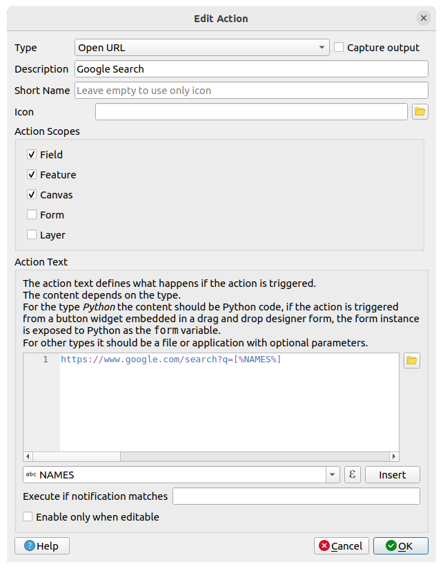

重要
翻訳は あなたが参加できる コミュニティの取り組みです。このページは現在 97.27% 翻訳されています。
16.1. ベクタプロパティダイアログ
ベクタレイヤの レイヤプロパティ ダイアログには、地図内のレイヤの地物の外観（シンボロジ、ラベル、ダイアグラム）やマウスとのインタラクション（アクション、地図のTips、フォームデザイン）を管理するための一般的な設定があります。また、レイヤについての情報を提供します。
レイヤプロパティ ダイアログにアクセスするには：
レイヤ パネル内において、レイヤをダブルクリックするか、レイヤを右クリックしてポップアップメニューから プロパティ... を選択する
レイヤを選択した状態で、 メニューを選ぶ
ベクタ レイヤプロパティ ダイアログには以下のセクションがあります：
|
||
ラベル[1] |
|
|
外部プラグイン[2] タブ |
[1] レイヤスタイルパネル からも利用可能です
[2] インストールした 外部プラグイン は、任意でこのダイアログにタブを追加することがあります。これらについては、このドキュメントでは説明しません。外部プラグインのドキュメントを参照してください。
Tip
レイヤスタイルの完全なまたは部分的なプロパティを共有する
ダイアログの下部にある メニューを使用すると、レイヤスタイルのプロパティまたはその一部をさまざまな対象（ファイル、クリップボード、データベース）からインポートしたり、対象へエクスポートしたりすることができます。 カスタムスタイルを管理する を参照してください。
注釈
埋め込まれたレイヤ（ 外部プロジェクトからのレイヤの埋め込み を参照）のプロパティ（シンボロジ、ラベル、アクション、デフォルト値、フォーム...）は、元のプロジェクトファイルから引用されているため、この動作を壊す可能性のある変更を避けるために、埋め込まれたレイヤに対してはレイヤプロパティダイアログは利用できなくなっています。
16.1.1. 情報プロパティ
 情報 タブは読み取り専用で、現在のレイヤの要約された情報やメタデータをさっと掴むことができる興味深い場所です。提供される情報には、以下のものがあります：
情報 タブは読み取り専用で、現在のレイヤの要約された情報やメタデータをさっと掴むことができる興味深い場所です。提供される情報には、以下のものがあります：
一般情報：プロジェクト内での名前、ソースへのパス、付随的なファイルのリスト、最終更新時刻、ファイルの大きさ、使用しているプロバイダ
レイヤのプロバイダからの情報：ストレージ形式、ジオメトリタイプ、データソースの文字コード、領域、地物数など
空間参照システム（CRS）：CRSの名前、単位、投影法、精度、参照（静的か動的か）
入力されたメタデータ からの情報：アクセス、領域、リンク、連絡先、履歴など
ジオメトリ（空間的な範囲やCRSなど）や、属性（フィールド数や各フィールドの特性など）に関連した情報
16.1.2. ソースプロパティ
 このタブでは、ベクタレイヤの一般的な設定の定義ができます。
このタブでは、ベクタレイヤの一般的な設定の定義ができます。
図 16.1 ベクタレイヤプロパティダイアログのソースタブ
16.1.2.1. 設定
レイヤのファイル名とは異なる レイヤ名 を設定すると、プロジェクト内（ レイヤパネル や式、印刷レイアウトの凡例など）でレイヤを識別するために使用されます。
データフォーマットにもよりますが、QGISが検出した文字コードが正しくない場合に データソースの文字コード を選択します。
16.1.2.2. CRSとジオメトリ

16.1.2.3. クエリビルダ
クエリビルダダイアログは、レイヤプロパティダイアログの ソース タブの下部、 プロバイダ地物フィルタ グループの下にある クエリビルダ ボタンからアクセスできます。
クエリビルダは、SQLライクな WHERE句を使用してレイヤ内の地物のサブセットを定義し、メインウィンドウにその結果を表示するためのインタフェースを提供します。クエリが有効である限り、プロジェクトで利用可能となる地物はクエリの結果に対応するもののみです。
クエリビルダ でフィルタを定義するために、複数のレイヤ属性を使用することができます。複数の属性の使用例を 図 16.2 に示します。この例では、フィルタは属性の結合を行っています。
toa(DateTimeフィールド:cast("toa" as character) > '2017-05-17'、cast("toa" as character) < '2019-12-24T18:00:00') 、name(Stringフィールド:"name" > 'S') 、FID(Integerフィールド:FID > 10)
これらをAND、ORそしてNOT演算子と括弧で結合しています。この文法（ toa フィールドのDateTime形式も含め）は、GeoPackageデータセットで動作します。
フィルタはデータプロバイダ（OGR、PostgreSQL、MS SQL Server...）レベルで行われます。そのため、構文はデータプロバイダに依存します（例えば、DateTimeはESRI Shapefileフォーマットではサポートされていません）。完全な式:
cast("toa" as character) > '2017-05-17' AND
cast("toa" as character) < '2019-12-24T18:00:00' AND
NOT ("name" > 'S' OR FID > 10)
また、 クエリビルダ ダイアログは メニューまたはレイヤのコンテキストメニューの フィルタ... オプションを使用して開くこともできます。ダイアログの 属性 、 値 、 演算子 セクションは、 プロバイダ特有のフィルタ式 ボックスに表示されるSQLライクなクエリを構築するのに役立ちます。

図 16.2 クエリビルダ
属性 のリストには、レイヤの全ての属性が含まれます。SQL WHERE句フィールドに属性カラムを追加するには、属性名をダブルクリックするか、SQLボックスに属性名を入力します。
値 フレームは、現在選択されている属性の値をリストします。属性のユニークな値を全てリストするには、 全て ボタンをクリックします。代わりに、カラムのユニークな値を最初の25個リストするには、 サンプル ボタンをクリックします。SQL WHERE句フィールドに値を追加するには、値リストの値をダブルクリックします。値フレームの上部にある検索ボックスを使用して、リスト内から属性値を簡単にブラウズして見つけることができます。
演算子 セクションには、使用可能な演算子全てが含まれています。SQL WHERE句フィールドに演算子を追加するには、適切なボタンをクリックします。関係演算子（ = 、 > など...）、文字列比較演算子（ LIKE ）、論理演算子（ AND 、 OR など...）が利用可能です。
テスト ボタンはクエリをチェックするのに役立ち、現在のクエリを満足する地物の数がメッセージボックスに表示されます。 クリア ボタンを使うと、SQLクエリを消去し、レイヤを元の状態（すなわち全ての地物を完全に読み込む状態）に戻します。クエリを .QQF ファイルとして 保存... することも、クエリをファイルからダイアログに 読み込み... することもできます。
フィルタが適用されている場合、QGISは結果として得られるサブセットがレイヤの全体であるかのように扱います。例えば、 'Borough' でフィルタ（"TYPE_2" = 'Borough' ）を適用すると、 Anchorage を表示することも、クエリすることも、保存も編集もできません。なぜならば、これは 'Municipality' であり、従ってサブセットの部分には含まれないからです。
Tip
レイヤパネル内におけるフィルタされたレイヤの表示
レイヤ パネルにおいて、フィルタされたレイヤはレイヤの横に  フィルタ アイコンが表示され、ボタンの上にマウスを置くと、使用されているクエリが表示されます。アイコンをダブルクリックすると クエリビルダ ダイアログが開き、フィルタを編集できます。これは メニューからもできます。
フィルタ アイコンが表示され、ボタンの上にマウスを置くと、使用されているクエリが表示されます。アイコンをダブルクリックすると クエリビルダ ダイアログが開き、フィルタを編集できます。これは メニューからもできます。
16.1.3. シンボロジプロパティ
 シンボロジ タブには、ベクタデータのレンダリングとシンボライズのための包括的なツールが用意されています。すべてのベクタデータに共通のツールや、さまざまな種類のベクタデータ用に作られた特別なシンボライズツールを使用することができます。ただし、すべてのタイプで次のようなダイアログ構造は共通です：上部には分類と地物のシンボルを準備するのに役立つウィジェットがあり、下部には レイヤレンダリング ウィジェットがあります。
シンボロジ タブには、ベクタデータのレンダリングとシンボライズのための包括的なツールが用意されています。すべてのベクタデータに共通のツールや、さまざまな種類のベクタデータ用に作られた特別なシンボライズツールを使用することができます。ただし、すべてのタイプで次のようなダイアログ構造は共通です：上部には分類と地物のシンボルを準備するのに役立つウィジェットがあり、下部には レイヤレンダリング ウィジェットがあります。
Tip
さまざまなレイヤ表現を素早く切り替える
レイヤプロパティ ダイアログの下部にある メニューを使用すると、必要なだけスタイルを保存できます。スタイルとは、レイヤの全てのプロパティ（例えばシンボロジ、ラベル、ダイアグラム、属性フォーム、アクションなど）を好きなように組み合わせたものです。そして、 レイヤパネル 内のレイヤのコンテキストメニューからスタイルを切り替えるだけで、異なるデータ表現が自動的に得られます。
Tip
ベクタシンボロジをエクスポートする
QGISからGoogle *.kml や *.dxf、MapInfo *.tab ファイルにベクタシンボロジをエクスポートするオプションがあります。まずはレイヤの右マウスメニューを開き、 をクリックして、出力ファイルの名前とその形式を指定します。ここでダイアログで メニューを使用して、シンボルを または のいずれかとして保存します。シンボルレイヤを使用している場合には、2番目の設定を使用することをお勧めします。
16.1.3.1. 地物のレンダリング
レンダラーは、地物を正しいシンボルと共に描画する役割を持ちます。レイヤのジオメトリタイプに関係なく、一般的なレンダラーには、単一シンボル、カテゴリ値、連続値、ルールベースの 4 つのタイプがあります。ポイントレイヤーには、点の競合回避、点のクラスタ、ヒートマップレンダラーがあり、ポリゴンレイヤーには、結合済み地物、反転ポリゴン、2.5Dレンダラーがあります。
連続色のレンダラーはありません。これは、実際には連続値レンダラーの特殊な場合でしかないからです。カテゴリ値レンダラーおよび連続値レンダラーは、シンボルとカラーランプを指定して作成することができ、これによってシンボルの色を適切に設定できます。各データタイプ（ポイント、ライン、およびポリゴン）には、ベクタシンボルレイヤタイプが利用可能です。選択したレンダラーによっては、ダイアログにさまざまな追加のセクションがあります。
注釈
ベクタレイヤのスタイルを設定する際にレンダラーの種類を変更しても、シンボルに設定した内容は維持されます。この機能は変更1回だけにしか働かないことに注意してください。レンダラーの種類の変更を繰り返すと、シンボルの設定は失われます。
単一シンボルレンダラー
単一定義（single） レンダラーは、単一のユーザー定義のシンボルを使用してレイヤの全ての地物をレンダリングするために使用します。シンボル表現についての情報は、 シンボルセレクタ を参照してください。

図 16.3 単一シンボルラインプロパティ
シンボルなしレンダラー
 シンボルなし レンダラーは、全ての地物に同一のレンダリングを適用することから、「単一定義シンボル」の特別なユースケースです。このレンダラーを使用すると、地物には何のシンボルも描画されませんが、ラベルやダイアグラム、その他の非シンボル部分は表示されます。
シンボルなし レンダラーは、全ての地物に同一のレンダリングを適用することから、「単一定義シンボル」の特別なユースケースです。このレンダラーを使用すると、地物には何のシンボルも描画されませんが、ラベルやダイアグラム、その他の非シンボル部分は表示されます。
地物選択もキャンバスのレイヤで行うことができ、選択された地物はデフォルトのシンボルでレンダリングされます。編集中の地物も表示されます。
このレンダラーは、ラベルやダイアグラムだけを表示したいレイヤのための便利なショートカットです。この目的のために完全に透明な塗りつぶしやストロークでシンボルをレンダリングする必要はありません。
カテゴリ値レンダラー
 カテゴリ値による定義（categorized） レンダラーは、属性値または式の離散的な値を反映する特性を持ったユーザー定義のシンボルを使用してレイヤの地物をレンダリングするために使用します。
カテゴリ値による定義（categorized） レンダラーは、属性値または式の離散的な値を反映する特性を持ったユーザー定義のシンボルを使用してレイヤの地物をレンダリングするために使用します。

図 16.4 カテゴリ値シンボルのオプション
カテゴリ値によるシンボロジをレイヤに使用するには、以下のように操作します。
分類の 値 の選択： これには既存のフィールドまたは 式 が使用できます。式はボックスに入力するか、関連する
 ボタンを使用して構築することができます。 カテゴリ値に式を使用することで、シンボロジのためにフィールドを作成する必要がなくなります（例えば、分類基準が複数の属性値に由来する場合など）。
ボタンを使用して構築することができます。 カテゴリ値に式を使用することで、シンボロジのためにフィールドを作成する必要がなくなります（例えば、分類基準が複数の属性値に由来する場合など）。地物の分類のために使用する式は、どんな種類のものでも可能です。例えば、
比較式：この場合、QGISは
1（ True ） か0（ False ）を返します。 以下は一例です。myfield >= 100 $id = @atlas_featureid myfield % 2 = 0 within( $geometry, @atlas_geometry )
異なるフィールドの結合：
concat( field_1, ' ', field_2 )
フィールド値を使った計算結果：
myfield % 2 year( myfield ) field_1 + field_2 substr( field_1, -3 )
連続値から離散的なクラスへの変換：例えば、
CASE WHEN x > 1000 THEN 'Big' ELSE 'Small' END
複数の離散値を結合して単一カテゴリ化：例えば、
CASE WHEN building IN ('residence', 'mobile home') THEN 'residential' WHEN building IN ('commercial', 'industrial') THEN 'Commercial and Industrial' END
Tip
地物を分類するためにはどんな種類の式も使用できますが、いくつかの複雑な式については ルールによる定義に基づくレンダリング を使用する方が簡単かもしれません。
全てのクラスのベースシンボルとなる シンボル を設定します。
カラーランプ を指定します。すなわち、各シンボルに適用する色によって、色の範囲を選択します。
カラーランプウィジェット の一般的なオプションに加えて、
 ランダムカラーランプ をカテゴリに適用することもできます。色が気に入らない場合には、 色をシャッフル エントリをクリックすると新しいランダムカラーの組み合わせを再生成することができます。
ランダムカラーランプ をカテゴリに適用することもできます。色が気に入らない場合には、 色をシャッフル エントリをクリックすると新しいランダムカラーの組み合わせを再生成することができます。次に、 分類 ボタンをクリックすると、与えられたフィールドもしくは式の離散値からクラスを生成します。
ライブ更新 が利用できない場合には、 適用 ボタンを押して変更を適用すると、マップキャンバス上の各地物がその分類のシンボルでレンダリングされます。
デフォルトでは、QGISは その他の値 クラスをリストに追加します。初期状態では値が空ですが、このクラスは他のクラスに該当しない地物のためのデフォルトのクラスとして使用されます（例えば、分類フィールド/式にない値を持った新しい地物を作成した場合）。
デフォルトの分類をさらに微調整することができます：
新しい分類を
 追加 したり、選択した分類を
追加 したり、選択した分類を  削除 する、または分類を すべて削除 することができます。
削除 する、または分類を すべて削除 することができます。クラス名の左にあるチェックボックスのチェックを外すことで、クラスを無効化することができます。無効化されたクラスに対応する地物はマップ上に表示されません。
行をドラッグ＆ドロップしてクラスの順序を並べ替えることができます。
アイテムをダブルクリックすると、シンボルや値、クラスの凡例を変更することができます。
選択したアイテムを右クリックすると、コンテキストメニューが表示されます：
シンボルをコピーする と シンボルを貼り付ける は、アイテムの表現を他のクラスに適用するのに便利な方法です。
選択したシンボルの 色を変更...
選択したシンボルの 不透明度を変更...
選択したシンボルの 出力単位を変更...
選択したラインシンボルの 幅を変更する...
選択したポイントシンボルの サイズを変更...
選択したポイントシンボルの 角度を変更...
カテゴリをマージ ：選択した複数のカテゴリを1つにまとめます。これにより、多数のカテゴリを持つレイヤのスタイル設定を簡単にできます。多数の相異なるカテゴリを、複数の値に適用される少数のより管理しやすいカテゴリの組にまとめることが可能になります。
Tip
マージされたカテゴリのシンボルは、リスト内で選択されたカテゴリのうち最上位のものとなるため、マージする前に再利用したいシンボルのカテゴリを上に移動させると良いでしょう。
以前にマージされた カテゴリをアンマージ
作成したルールは レイヤ パネルのツリー階層にも表示されます。マップの凡例でエントリをダブルクリックすると、適用されたシンボルを編集できます。右クリックすると さらにオプション が表示されます。
保存されたシンボルに一致 ： シンボルのライブラリ を使用して、分類のクラス値と名前が一致するシンボルを各カテゴリに割り当てます。
ファイルからのシンボルに一致... ：シンボルが保存されたファイルを指定して、分類のクラス値と名前が一致するシンボルを各カテゴリに割り当てます。
描画順序... は、シンボルのレンダリング順序を定義できます。
連続値レンダラー
 連続値による定義（graduated） レンダラーは、選択した地物の属性値のクラス割り当てを反映した色やサイズのユーザー定義のシンボルを使用して、レイヤの地物すべてをレンダリングするために使用します。
連続値による定義（graduated） レンダラーは、選択した地物の属性値のクラス割り当てを反映した色やサイズのユーザー定義のシンボルを使用して、レイヤの地物すべてをレンダリングするために使用します。
カテゴリ値レンダラーと同じように、連続値レンダラーでは特定の列について回転やサイズ縮尺の値を定義できます。
また、カテゴリ値レンダラーと同じように、以下の選択ができます：
分類の 値 ： これには既存のフィールドまたは 式 が使用できます。式はボックスに入力するか、関連する
ボタンを使用して構築することができます。 連続値に式を使用することで、シンボロジのためにフィールドを作成する必要がなくなります（例えば、分類基準が複数の属性値に由来する場合など）。シンボル（シンボルセレクタダイアログを使用します）
凡例のフォーマットと精度
シンボルの変化に使用する方法：色または大きさ
色（カラーランプのリストを使用）：方法で色を選択した場合
大きさ（大きさの定義域およびその単位）
それから、割り当てられたフィールドまたは式の値のインタラクティブなヒストグラムを示す「ヒストグラム」タブを使用できます。ヒストグラムウィジェットを使用して、クラス分割の移動や追加ができます。
注釈
ベクタレイヤに関する詳細な情報を取得するために、統計パネルを使用できます。 統計量の出力パネル を参照してください。
「クラス」タブに戻って、クラスの数および地物をクラスに分類するためのモードも（「モード」リストを使用して）指定できます。使用可能なモードは以下のとおりです：
等量分類（Quantile）：各クラスは同じ数の要素を持ちます（ボックスプロットの考え方）。
等間隔分類：各クラスは同じサイズを持ちます（例：値の範囲が1から16で、4つのクラスとすると、各クラスのサイズは4です）
固定間隔：各クラスは、固定された値の範囲を持ちます（例：値が1から16で間隔サイズが4の場合、クラスは1-4、5-8、9-12、13-16となります）。
対数スケール：広い範囲の値を持つデータに対して適しています。小さい値は狭いクラス、大きな値は広いクラスになります（例：範囲 [0..100] の10進数で、2つのクラスとすると、1つ目のクラスは0から10まで、2つ目のクラスは10から100までとなります）。
自然分類（Jenks）：各クラス内の分散を最小化し、クラス間の分散を最大化するように分類します。
丸め間隔（Pretty）：xの値の範囲をカバーする、約n+1 個の等間隔のちょうどよい値の列を計算します。値は10のべき乗の1、2または5倍になるように選択されます（R言語のpretty https://www.rdocumentation.org/packages/base/topics/pretty に基づいています）。
標準偏差：クラスは値の標準偏差に応じて形成されます。
シンボロジ タブの中央にあるリストボックスには、クラスと値の範囲、凡例、レンダリングされるシンボルがリストされます。
分類 ボタンをクリックすると、選択したモードを使用してクラスが作成されます。各クラスは、クラス名の左にあるチェックボックスのチェックを外すことで無効にできます。
シンボルや値、クラスの凡例を変更するには、変更したい項目をダブルクリックします。
選択したアイテムを右クリックすると、コンテキストメニューが表示されます：
シンボルをコピーする と シンボルを貼り付ける は、アイテムの表現を他のクラスに適用するのに便利な方法です。
選択したシンボルの 色を変更...
選択したシンボルの 不透明度を変更...
選択したシンボルの 出力単位を変更...
選択したラインシンボルの 幅を変更する...
選択したポイントシンボルの サイズを変更...
選択したポイントシンボルの 角度を変更...
図 16.5 の例は、QGISサンプルデータセットの major_rivers レイヤに対する連続値レンダリングダイアログを示しています。

図 16.5 連続値シンボルのオプション
作成したルールは レイヤ パネルのツリー階層にも表示されます。マップの凡例でエントリをダブルクリックすると、適用されたシンボルを編集できます。右クリックすると さらにオプション が表示されます。
比例シンボルと多変量解析
比例シンボルや多変量解析は、シンボロジのレンダリングドロップダウンリストから利用可能なレンダリングタイプではありません。しかし、上に挙げた任意のレンダリングオプションと データによって定義された上書き オプションを組み合わせることで、QGISにおいてポイントデータやラインデータをそのような表現で表示することができます。
比例シンボルを作成する
比例シンボルレンダリングを適用するには、以下の手順で操作します：
まずは、レイヤに 単一シンボルレンダラー を適用します。
次に、地物に適用するシンボルを設定します。
シンボルツリーの上位のアイテムを選択し、 大きさ （ポイントレイヤ）や 幅 （ラインレイヤ）オプションの隣にある
 データによって定義された上書き ボタン を使用します。
データによって定義された上書き ボタン を使用します。フィールドを選択するか式を入力すると、各地物についてQGISは出力値をプロパティに適用し、マップキャンバスのシンボルを比例したサイズに変更します。
必要ならば、
メニューの アシスタント... オプションを使用することで、シンボルサイズに何らかの変換（指数関数的、フラナリー...）を適用し、サイズの再スケーリングができます（詳細は データによる定義のアシスタントインターフェースを使用する 参照）。
レイヤパネル 内や 印刷レイアウトの凡例アイテム で比例シンボルを表示するかどうかを選択することができます。シンボロジ タブのメインダイアログの下部にある 詳細設定 ドロップダウンリストを開き、 データによる凡例サイズの定義... を選択して、凡例アイテムの設定ができます（詳細は データ定義による凡例サイズ を参照）。
多変量解析を作成する
多変量解析レンダリングを使用すると、複数の変数間の関係を評価するのに役立ちます。例えば、ある変数をカラーランプで表して、別の変数をサイズで表現することができます。
QGISで多変量解析を作成する最も簡単な方法は、
はじめに、カテゴリ値または連続値によるレンダリングをレイヤに適用します。すべてのクラスが同じタイプのシンボルです。
次に、クラスに比例シンボロジを適用します：
分類フレームの上にある 変更 ボタンをクリックすると、 シンボルセレクタ ダイアログが開きます。
上で見たのと同様、
データによって定義された上書き ウィジェットを使用して、シンボルレイヤの大きさや幅を再スケーリングします。
比例シンボルと同様に、カテゴリ値あるいは連続値クラスシンボルの上には、 データによる凡例サイズの定義 機能を使用してスケーリングされたシンボロジをレイヤツリーに追加することができます。また、これらの表現は印刷レイアウトの凡例アイテムでも利用可能です。
図 16.6 凡例サイズを変化させた多変量解析の例
ルールベースレンダラー
ルールはQGISの 式 で、属性やプロパティによって地物を区別し、特定のレンダリング設定をその地物へ適用するために使用されます。ルールは入れ子にすることが可能で、地物は入れ子になった上位のレベルすべてに属している場合に、あるクラスに属します。
 ルールによる定義（rule-based） レンダラーは、選択した地物を細分化されたクラスに割り当てることを反映する特性を持ったシンボルを使用してレイヤの地物すべてをレンダリングするために設計されています。
ルールによる定義（rule-based） レンダラーは、選択した地物を細分化されたクラスに割り当てることを反映する特性を持ったシンボルを使用してレイヤの地物すべてをレンダリングするために設計されています。
ルールを作成するには：
既存の行をダブルクリックしてアクティブにするか（デフォルトでは、レンダリングモードが有効な場合、QGISはルールなしのシンボルを追加します）、または
 現在のルールを編集 ボタンや ルールを追加 ボタンをクリックします。
現在のルールを編集 ボタンや ルールを追加 ボタンをクリックします。開いた ルールの編集 ダイアログにおいて、各ルールを識別しやすいようにラベルを定義することができます。このラベルは レイヤパネル 内や印刷レイアウトの凡例にもに表示されます。
 フィルタ オプションの隣にあるテキストボックスに式を手入力するか、テキストボックスの隣にある ボタンを押し、式文字列ビルダダイアログを開きます。
フィルタ オプションの隣にあるテキストボックスに式を手入力するか、テキストボックスの隣にある ボタンを押し、式文字列ビルダダイアログを開きます。提供されている関数とレイヤ属性を使用して、検索したい地物をフィルタリングするための 式 を作成します。 テスト ボタンを押すと、クエリの結果が確認できます。
ルールの詳しい説明のため、より長いラベルを入力することができます。
 縮尺の範囲 オプションを使用して、ルールが適用される縮尺を設定することができます。
縮尺の範囲 オプションを使用して、ルールが適用される縮尺を設定することができます。最後に、地物に 使用するシンボル を設定します。
そして、 OK ボタンを押します。
ルールを要約した新しい行がレイヤプロパティダイアログに追加されます。上記の手順に従いルールを作成するか、既存のルールをコピー＆ペーストして、必要なだけルールを作成できます。ルールをドラッグ＆ドロップで上に重ねることで、ルールを入れ子にし、上位のルールの地物をサブクラスで改良できます。
ルールによる定義レンダラーは、カテゴリ値や連続値によるレンダラーと組み合わせることができます。ルールを選択し、 選択したルールの絞り込み ドロップダウンメニューを使用して、その機能をサブクラスでまとめることができます。絞り込みされたクラスはルールのサブアイテムのようにツリー階層で表示され、その親と同様に、各クラスでシンボロジやルールを設定できます。ルールの自動的な再設定は、以下の要素に基づいて行われます：
スケール ：指定された縮尺のリストに基づいて、このオプションはさまざまなユーザー定義の縮尺範囲を適用する一連のクラスを作成します。スケールに基づいた新たな各クラスは、独自のシンボロジや式の定義を持つことができます。これは例えば、さまざまな縮尺で同じ地物を異なるシンボルで表示したり、縮尺に応じて一部の地物だけを表示するのに便利な方法です（例えば、ローカル空港は大きなスケールで、国際空港は小さなスケールで表示するなど）。
カテゴリ ：選択したルールに合致する地物に カテゴリ値レンダラー を適用します。
範囲 ：選択したルールに合致する地物に 連続値レンダラー を適用します。
絞り込まれたクラスはルールのサブアイテムのようにツリー階層で表示され、上と同様に各クラスにシンボロジを設定できます。入れ子になったルールのシンボルは上に積み重なっていくため、その選択には注意が必要です。 ルールの編集 ダイアログで シンボル のチェックを外すことで、特定のシンボルをスタック内でレンダリングしないようにできます。
ルールの編集 ダイアログでは、全てのルールは記述せず、  もしくは オプションを使用して、同じレベルの他のどんなルールにもマッチしない地物全てをキャッチすることができます。これは、 ダイアログの ルール 列に
もしくは オプションを使用して、同じレベルの他のどんなルールにもマッチしない地物全てをキャッチすることができます。これは、 ダイアログの ルール 列に Else と入力することでも実現できます。
選択したアイテムを右クリックすると、コンテキストメニューが表示されます：
コピー と 貼り付け ：既存のアイテムをもとに新しいアイテムを作成するのに便利な方法です。
シンボルをコピーする と シンボルを貼り付ける は、アイテムの表現を他のクラスに適用するのに便利な方法です。
選択したシンボルの 色を変更...
選択したシンボルの 不透明度を変更...
選択したシンボルの 出力単位を変更...
選択したラインシンボルの 幅を変更する...
選択したポイントシンボルの サイズを変更...
選択したポイントシンボルの 角度を変更...
現在のルールを再調整する サブメニューを開き、現在のルールを スケール 、 カテゴリ または 範囲 で絞りこむことができます。ダイアログ下部にある 対応したメニュー を選択したときと同様です。
ルールによる定義レンダラーダイアログの行のチェックを外すと、特定のルールやその入れ子になったルールに当てはまる地物がマップキャンバスから隠されます。
作成したルールはマップの凡例においてもツリー階層で表示されます。マップの凡例でエントリをダブルクリックすると、適用されたシンボルを編集できます。右クリックすると さらにオプション が表示されます。
図 16.7 の例は、QGISサンプルデータセットの河川レイヤに対するルールによるレンダリングダイアログを示しています。
図 16.7 ルールによる定義シンボルのオプション
点の競合回避レンダラ
 点の競合回避 レンダラは、互いに与えられた距離の許容範囲内にあるポイント地物を取り、異なる配置方法に従って、それらのシンボルをそれらの重心の周りに配置します。これは、点レイヤの地物が同じ場所にあっても（例 建物内の施設）、すべての地物を視覚化する便利な方法です。
点の競合回避 レンダラは、互いに与えられた距離の許容範囲内にあるポイント地物を取り、異なる配置方法に従って、それらのシンボルをそれらの重心の周りに配置します。これは、点レイヤの地物が同じ場所にあっても（例 建物内の施設）、すべての地物を視覚化する便利な方法です。
点の競合回避レンダラを設定するには:
中央シンボル を設定します: 中心にある仮想的な点がどのように表示されるか
レンダラ の種類を選びます: レイヤ内の地物をどのように分類するか（単一、カテゴリ値、ルール...）
レンダラの設定... ボタンを押して選択したレンダラに応じた地物のシンボロジを設定します
近い地物が重なっているとみなされ、同じ仮想的な点上で競合回避する 距離 許容範囲を設定します。共通のシンボル単位をサポートします。
競合する点の配置方法 を設定します:
リング状に配置 ：すべての地物を一つの円周上に配置します。円周の半径は表示する地物の数に依存します。
同心円状に配置 ：地物を表示するために同心円の集合を使用します。
グリッド ：規則的な格子を生成し、格子の交点にポイントシンボルを配置します。
競合回避シンボルは 置き換え線 上に配置されます。置き換え線の最小間隔はポイントシンボルレンダラに依存しますが、 ストローク幅、 ストローク色、 サイズ調整 などの設定をカスタマイズすることができます（例えば、レンダリングされたポイントの間隔を広げるなど）。
ラベル グループオプションを使用して、ポイントのラベル付けを行います: ラベルは競合回避シンボルの近くに配置され、地物の実際の位置には配置されません。
ラベル属性: ラベル付けに使うレイヤのフィールドを選択します。
ラベルフォント プロパティと大きさを設定します
ラベル色 を選びます
ラベルの距離係数 を設定します: 各ポイント地物のラベルを、シンボルの対角サイズに比例して、シンボルの中心からオフセットします。
- 縮尺依存ラベルを使用する をオンにすると、指定した 地図の最小縮尺 より大きな縮尺のときだけラベルを表示します。

図 16.8 点の競合回避ダイアログ
注釈
点の競合回避レンダラーは、地物のジオメトリは変更しません。つまり、ポイントはその位置から移動してはいません。ポイントは元の場所に位置しています。変更はレンダリング目的のための視覚的なものに過ぎません。ずらした地物を作成したい場合には、代わりにプロセシングアルゴリズムの 近隣点を散らす を使用してください。
点のクラスタレンダラー
点の競合回避 レンダラーが最も近いか重ね合うポイント地物の配置を吹き飛ばすのとは異なり、 点のクラスタ レンダラーは近接した点を1つのレンダリングされたマーカーシンボルにグループ化します。互いに指定された距離内にある点は1つのシンボルに統合されます。点の集約は、単に検索距離内の最初のグループを割り当てるのではなく、最も近いグループが形成されるように行われます。
メインダイアログでは、以下の設定ができます。
クラスタシンボル に点のクラスタを表すシンボルを設定する; デフォルトのレンダリングでは、フォントマーカーシンボルレイヤの
@cluster_sizevariable により集約された地物の数が表示されます。レンダラ の種類、つまりレイヤ内の地物をどのように分類したいか（単一、カテゴリ値、ルール...）を選びます
レンダラの設定 ボタンを押すと、地物のシンボルを通常通り設定することができます。このシンボルはクラスタ化されていない地物にのみ表示され、それ以外の地物には クラスタシンボル が適用されることに注意してください。また、クラスタ内のすべての点地物が同じレンダリングクラスに属し、同じ色が適用される場合、その色はクラスタの
@cluster_color変数を表します。地物をクラスタ化する際に考慮する 距離 の最大値を指定します。共通のシンボル単位をサポートします。
図 16.9 点のクラスタダイアログ
注釈
点のクラスタレンダラーは、地物のジオメトリは変更しません。つまり、ポイントはその位置から移動してはいません。ポイントは元の場所に位置しています。変更はレンダリング目的のための視覚的なものに過ぎません。クラスターに基づく地物を作成したい場合には、代わりにプロセシングアルゴリズムの K平均クラスタリング または DBSCANクラスタリング を使用してください。
結合済み地物レンダラー
 結合済み地物 レンダラーは、レンダリング前にポリゴン地物やライン地物を単一のオブジェクトに “融合させる” ことができます。これにより、複雑なシンボルや重なった地物が単一の連続的な地図シンボルとして表現されます。
結合済み地物 レンダラーは、レンダリング前にポリゴン地物やライン地物を単一のオブジェクトに “融合させる” ことができます。これにより、複雑なシンボルや重なった地物が単一の連続的な地図シンボルとして表現されます。
反転ポリゴンレンダラー
反転ポリゴン レンダラーでは、レイヤのポリゴンの外側を塗りつぶすシンボルを定義できます。上記と同様、サブレンダラー、すなわち単一シンボル、連続値、カテゴリ値、ルールに基づく、または2.5Dレンダラーを選択できます。
図 16.10 反転ポリゴンダイアログ
ヒートマップレンダラー
 ヒートマップ レンダラーを使用すると、（マルチ）ポイントレイヤ用のライブダイナミックヒートマップを作成できます。ヒートマップ半径をミリメートル、ポイント、ピクセル、地図単位、インチで指定したり、ヒートマップのスタイルのカラーランプの選択・編集をしたり、スライダーを使用してレンダリングの速度と品質のトレードオフを選択したりすることができます。また、最大値の上限を定義したり、フィールドや式を使用してポイントに重みづけを与えることもできます。地物を追加したり削除したりすると、ヒートマップレンダラは自動的にヒートマップスタイルを更新します。
ヒートマップ レンダラーを使用すると、（マルチ）ポイントレイヤ用のライブダイナミックヒートマップを作成できます。ヒートマップ半径をミリメートル、ポイント、ピクセル、地図単位、インチで指定したり、ヒートマップのスタイルのカラーランプの選択・編集をしたり、スライダーを使用してレンダリングの速度と品質のトレードオフを選択したりすることができます。また、最大値の上限を定義したり、フィールドや式を使用してポイントに重みづけを与えることもできます。地物を追加したり削除したりすると、ヒートマップレンダラは自動的にヒートマップスタイルを更新します。

図 16.11 ヒートマップダイアログ
2.5Dレンダラー
2.5D レンダラーを使用すると、レイヤの地物に対して2.5次元的な効果を作成することができます。まずは、 高さ の値を（マップ単位で）選択します。これには、固定値、レイヤのフィールドのいずれか、または式を使用することができます。また、視点位置を再現するために 角度 を（度単位）を選択する必要があります（0° は西を意味し、反時計回り方向に数字が大きくなります）。詳細設定オプションで、 屋根の色 と 壁の色 を設定します。地物の壁に太陽放射をシミュレートしたい場合には、 壁の向きに応じた陰影表現 オプションにチェックを入れてください。また、影の 色 と 大きさ （マップ単位）を設定することで、影をシミュレートすることもできます。
図 16.12 2.5Dダイアログ
Tip
2.5D効果を他のレンダラーと併用する
2.5Dレンダラーの基本的なスタイルの設定が完了したら、これを別のレンダラー（単一、カテゴリ値、連続値）に変換できます。2.5D効果は保持され、他のすべてのレンダラー固有のオプションを使用して調整することができます（これにより、例えばカテゴリシンボルに素敵な2.5次元表現を加えたり、2.5Dシンボルにさまざまな追加のスタイリングを加えられます）。影や「建物」自体が他の近くの地物と干渉しないようにするためには、描画順序を有効にする必要がある場合があります（ ）。2.5Dの高さと角度の値はレイヤ内の変数に保存されているので、後からレイヤのプロパティダイアログボックスの変数タブで編集することができます。
埋め込みシンボルレンダラー
埋め込みシンボル レンダラーは、データソースが提供する「ネイティブな」シンボルを表示します。これは主に、既定のシンボロジを持つ KML や TAB データセットで利用します。
16.1.3.2. レイヤレンダリング
シンボロジタブでは、レイヤの全ての地物に共通で作用するいくつかのオプションを設定することもできます：
不透明度
 ：このツールを使用すると、マップキャンバスで背面にあるレイヤを見えるようにできます。スライダーを使用して、ベクタレイヤの見え方を必要に応じて変化させてください。スライダーの横にあるメニューで不透明度の割合を正確に定義することもできます。
：このツールを使用すると、マップキャンバスで背面にあるレイヤを見えるようにできます。スライダーを使用して、ベクタレイヤの見え方を必要に応じて変化させてください。スライダーの横にあるメニューで不透明度の割合を正確に定義することもできます。レイヤ や 地物 レベルの 混合モード ：このツールを使用すると、これまではグラフィックソフトでしか使えなかったような、特別なレンダリング効果が得られます。上下のレイヤのピクセルは、 混合モード で説明されている設定で混合されます。
描画エフェクト ボタンを使用して、レイヤの地物すべてに 描画効果 を適用します。
地物描画順序の制御 では、地物属性を使用して、地物のレンダリングの Z-順序 を定義できます。チェックボックスを有効にし、横にある
 ボタンを押してください。 順序を定義する ダイアログが開き、以下の手順で描画順序の定義ができます：
ボタンを押してください。 順序を定義する ダイアログが開き、以下の手順で描画順序の定義ができます：フィールドを選択するか、レイヤの地物に適用する式を作成します。
取得した地物をどの順序で並べるかを設定します。つまり、 昇順 を選択した場合には、低い値の地物が高い値の地物よりも下にレンダリングされます。
地物がNULL値を返す時のレンダリングについて定義します： NULLは最初に （一番下に）または NULLは最後に （一番上に）
使用したいルールの数だけ上記の手順を繰り返します。
最初のルールはレイヤ内の全ての地物に適用され、戻り値に応じてz-順序が付けられます。それから、同じ値（NULL値も含む）を持った各グループ内の地物について、同じz-順序を持っていることから、次のルールを適用してこれらを並べ替えます。以下、同様に続きます。
図 16.13 レイヤレンダリングオプション
16.1.3.3. その他の設定
シンボルレベル
重なったシンボルレイヤを許可するレンダラー（ヒートマップのみなし）のために、各シンボルレベルのレンダリング順序を制御するためのオプションがあります。
ほとんどのレンダラーについて、保存されたシンボルリストの下の 詳細設定 ボタンをクリックして 描画順序 を選択することで、シンボルレベルのオプションにアクセスすることができます。 ルールベースレンダラー では、このオプションは 描画順序... ボタンから直接利用可能である一方で、 点の競合回避レンダラ レンダラーではこのボタンは レンダラの設定 ダイアログ内にあります。
シンボルレベルを有効にするには、 描画順序を有効にする にチェックを入れます。各行には結合されたシンボルの小さなサンプルとそのラベル、個々のシンボルレイヤが表示され、個々のシンボルレイヤは横に番号が付いた列に分割されています。数字はシンボルレイヤが描画されるレンダリング順序のレベルを表します。低い値のレベルが最初に描画されて下に置かれ、高い値のレベルは最後に他のシンボルレイヤの上に描かれます。

図 16.14 描画順序ダイアログ
注釈
描画順序を無効にしている場合には、完全なシンボルがそれぞれの地物の順序に従って描画されます。重なるシンボルは、他の下にあるシンボルを単に見えにくくします。加えて、同種のシンボルがお互いに「結合する」ことはありません。

図 16.15 シンボルレベルの有効（A）と無効（B）の差
データ定義による凡例サイズ
レイヤが 比例シンボルや多変量解析レンダリング によってレンダリングされている場合や、レイヤに 可変サイズダイアグラム が適用されている場合には、 レイヤパネル や 印刷レイアウトの凡例 のどちらにもスケーリングされたシンボルを表示させることができます。
データによる凡例サイズの定義 ダイアログを有効にしてシンボロジをレンダリングするには、保存されたシンボルリストの下にある 詳細設定 ボタンの同名のオプションを選択します。ダイアグラムについては、このオプションは 凡例 タブにあります。このダイアログには、以下のオプションがあります：
凡例タイプの選択：
凡例が有効になっていません 、 リスト型凡例 、 重ね合わせ凡例 から選択します。重ね合わせ凡例オプションについては、凡例アイテムの整列を 下 か 中央 で選択できます。凡例表現で使用する シンボル のプレビュー
凡例へのタイトルの挿入
使用するクラスのサイズの再設定：デフォルトでは、QGISは（自然なプリティブレークに基づく）5つのクラスの凡例を提供しますが、
サイズ項目の指定 オプションを使用して独自の分類を適用することができます。 と ボタンを使用して、カスタムクラスの値とラベルを設定します。重ね合わせ凡例の場合には、以下を設定できます：
整列方法 ：下または中央
ラインシンボル の設定：シンボルから対応する凡例テキストへ引かれる水平線
凡例のプレビューがダイアログの右パネルに表示され、パラメータの設定に応じて更新されます。

図 16.16 データによる凡例サイズの設定
注釈
現在のところ、レイヤのシンボロジに対するデータによる凡例サイズの設定は、ポイントレイヤで単一定義、カテゴリ値、または連続値シンボロジを使用する場合にのみ適用できます。
アニメーション設定
シンボルを アニメーションシンボル にするには、 アニメーション設定 パネルを利用します。このパネルではシンボルのアニメーションを有効にし、シンボルを再描画するフレームレートを設定することができます。
まず、最上位のシンボルレベルに行き、ダイアログの右下にある 詳細設定 メニューを選択します
アニメーション設定 オプションを探します
- アニメーション化 をチェックしてシンボルのアニメーションを有効にします
フレームレート、つまりアニメーションの再生速度を設定します
これでサブシンボルのプロパティをアニメーション化するために、
@symbol_frame変数をそのデータ定義プロパティで使えるようになります。
例えば、シンボルの角度を @symbol_frame % 360 というデータ定義された式に設定すると、そのシンボルは時間と共に回転し、回転速度はシンボルのフレームレートによって決まります:
図 16.17 シンボルの角度をデータ定義の式に設定する
描画エフェクト
レイヤのレンダリングを改善し、地図の最終レンダリングのために他のソフトウェアに頼ることを避ける（あるいは少なくとも減らす）ために、QGISにはもう 1 つ強力な機能があります。 それは  描画エフェクト オプションで、ベクタレイヤの可視化をカスタマイズするための描画効果を追加します。
描画エフェクト オプションで、ベクタレイヤの可視化をカスタマイズするための描画効果を追加します。
このオプションは、 ダイアログの レイヤレンダリング グループ（レイヤ全体に適用する場合）、または シンボルレイヤプロパティ （対応する地物に適用する場合）にて利用可能です。両方を組み合わせて使用することもできます。
描画効果は 描画エフェクト オプションにチェックを入れ、 効果をカスタマイズ ボタンをクリックすることで有効化できます。これによって 効果のプロパティ ダイアログ（ 図 16.18 参照）が開きます。以下のエフェクトタイプとカスタムオプションが利用可能です：
ソース ：レイヤのプロパティの設定に応じて地物の元のスタイルを描画します。スタイルの 不透明度 や、 混合モード 、 描画モード の調整を行えます。これらはすべてのエフェクトタイプにに共通のプロパティです。

図 16.18 描画エフェクト：ソースダイアログ
ぼかし ：ベクタレイヤにぼかし効果を追加します。変更可能なカスタムオプションには、 ぼかしの種類 （ Stack blur （高速・高dpi非対応） または Gaussian blur （高dpi対応） ）と ぼかしの強さ があります。

図 16.19 描画エフェクト：ぼかしダイアログ
色付け ：この効果は、単一の色相を使用したスタイルのバージョンを作成するために使用します。ベースは常にシンボルのグレースケールバージョンで、これに対し以下の設定ができます：
 グレースケール は、グレースケール画像をどのように作成するかを選択するのに使用します：選択肢は、「明度を使用」、「光度を使用」、「平均を使用」、「オフ」です。
グレースケール は、グレースケール画像をどのように作成するかを選択するのに使用します：選択肢は、「明度を使用」、「光度を使用」、「平均を使用」、「オフ」です。- 着色 にチェックを入れると、別の色と混合することができ、色の強さを調整できます。
適用後のシンボルの 輝度 、 コントラスト 、 彩度 のレベルを調整できます。

図 16.20 描画エフェクト：色付けダイアログ
ドロップシャドウ ：この効果を使用すると地物に影が追加され、奥行きが追加されたように見えます。この効果は、影が移動する方向とソースオブジェクトとの近さを決定する オフセット 角度・距離を変更することでカスタマイズできます。 にはエフェクトの ぼかし半径 と 色 を変更するオプションもあります。
図 16.21 描画エフェクト：ドロップシャドウダイアログ
インナーシャドウ ：この効果は ドロップシャドウ 効果と似ていますが、こちらは地物の境界の内部に影効果を追加します。カスタマイズに関するオプションは ドロップシャドウ 効果のものと同様です。

図 16.22 描画エフェクト：インナーシャドウダイアログ
インナーグロー ：地物内部にグロー効果を追加します。この効果は、グローの 広がり （幅）や ぼかし半径 を調整することでカスタマイズできます。後者は、ぼかしをかけたい地物の端からの距離を指定します。加えて、 単一色 または カラーランプ を使用してグローの色をカスタマイズするオプションもあります。

図 16.23 描画エフェクト：インナーグローダイアログ
アウターグロー ：この効果は インナーグロー 効果と似ていますが、こちらは地物の境界の外部にグロー効果を追加します。カスタマイズに関するオプションは インナーグロー 効果のものと同様です。

図 16.24 描画エフェクト：アウターグローダイアログ
トランスフォーム ：シンボル形状の変形可能性を追加します。カスタマイズに利用可能な1つ目のオプションは 水平反転 と 垂直反転 で、これらは実際にシンボルを水平・垂直軸に反転したものを作成します。その他のオプションは以下のとおりです：
変形X,Y ：地物をX軸方向やY軸方向に歪めます。
縮尺 X,Y ：X軸やY軸に沿って与えられた割合で地物を拡大または縮小します。
回転 ：地物を中心周りに回転させます。
移動 X,Y ：与えられたX軸やY軸方向距離に基づきアイテムの位置を変更します。

図 16.25 描画エフェクト：トランスフォームダイアログ
複数のエフェクトタイプを同時に使用することができます。エフェクトリスト内のチェックボックスを使用して、エフェクトを有効化（無効化）できます。選択したエフェクトタイプを変更するには、 エフェクトのタイプ オプションを使用します。  上に移動 と
上に移動 と  下に移動 ボタンを使用してエフェクトを並べ替えたり、 新しい効果を追加 や 効果を削除 ボタンを使用してエフェクトを追加/削除することもできます。
下に移動 ボタンを使用してエフェクトを並べ替えたり、 新しい効果を追加 や 効果を削除 ボタンを使用してエフェクトを追加/削除することもできます。
描画エフェクトで共通のオプションがあります。 不透明度 と 混合モード オプションは、 レイヤレンダリング での説明と同様に働き、トランスフォーム効果を除く全ての描画エフェクトで使用できます。
また、全てのエフェクトについて 描画モード オプションが利用可能であり、下記のいくつかのルールに従い、シンボルのレンダリングや修正を行うかどうかについて選択できます。
エフェクトは上から下の順でレンダリングされます。
レンダーのみ モードは、エフェクトが見えることを意味します。
モディファイアのみ モードは、エフェクトは見えないものの、適用した変更は次のエフェクト（すぐ1つ下のエフェクト）に渡されます。
レンダーとモディファイア モードは、エフェクトが表示され、変更は次のエフェクトに渡されます。エフェクトがエフェクトリストの最上位またはすぐ上のエフェクトがモディファイアモードでない場合には、レイヤプロパティのオリジナルのソースシンボルを使用します（「ソース」と同様です）。
16.1.4. ラベルプロパティ
ラベル プロパティは、ベクタレイヤに対するスマートなラベル付けを設定するために必要かつ適切なすべての機能を提供します。このダイアログには、 レイヤスタイル パネルや ラベルツールバー の レイヤラベリングオプション ボタンからもアクセスできます。
最初のステップは、ラベル付けの手法をドロップダウンリストから選択することです。利用可能な手法は、以下のとおりです：

単一定義 オプションを選択したとすると、次のステップは以下のダイアログが開きます。
図 16.26 レイヤのラベル設定 - 単一定義
ダイアログの最上部には、 値（Value） のドロップダウンリストがあります。ラベル付けに使用する属性カラムを選択することができます。デフォルトでは、 表示名フィールド が使用されます。式に基づいてラベルを定義したい場合には、 をクリックします。詳細は 式に基づいてラベルを定義する を参照してください。
注釈
凡例 タブでラベル凡例表示を有効にした場合、フォーマット付きのラベルが凡例内のエントリとして表示されます。
以下は、様々なタブの下でラベルをカスタマイズするために表示されるオプションです。


{kind=link}
{kind=link}
{kind=link}
{kind=link}
{kind=link}
{kind=link}
{kind=link}
{kind=link}
{kind=link}
{kind=link}
{kind=link}
{kind=link}
{kind=link}
{kind=link}
各プロパティの設定方法は、 ラベルの設定 にあります。
16.1.4.1. 自動配置エンジンの設定
ラベルの自動的なふるまいに関するプロジェクトレベルの設定を行うために、自動配置設定を使用することができます。 ラベル タブの右上隅にある  自動配置設定（全レイヤに適用） ボタンをクリックするとダイアログが開き、以下の設定ができます：
自動配置設定（全レイヤに適用） ボタンをクリックするとダイアログが開き、以下の設定ができます：
図 16.27 ラベルの自動配置エンジン
候補の数 ：ライン地物やポリゴン地物について、地物のサイズに基づき可能なラベル配置の数を計算し割り当てます。地物が長いあるいは広いほど、より多くの候補を持ち、そのラベルは衝突のリスクが減ってより良い配置が可能となります。
テキスト出力形式 ：PDFやSVGへの マップキャンバスのエクスポート や レイアウトのエクスポート の際に、ラベルレンダリングウィジェットのデフォルト値を設定します。 ラベルを常にテキストとしてレンダリング を選択した場合、ラベルは外部アプリケーション（Inkscapeなど）で通常のテキストとして編集することが可能です。ただし、副作用としてレンダリング品質が低下し、さらにテキストにバッファ等の特定の設定がなされていると、レンダリングに問題が発生します。このため、ラベルをアウトラインとしてエクスポートする ラベルを常にパスとしてレンダリング（推奨） を推奨しています。
- 地図の端のラベルは省略 ：マップ範囲から部分的に外れたラベルをレンダリングするかどうかを制御します。チェックを入れると、（見える範囲内で完全なラベルを配置できない場合、）切れたラベルが表示されます。チェックを外すと、部分的にしか見えないラベルはスキップされます。この設定は、 地図レイアウトのアイテム のラベル表示には影響しないことに留意してください。
- 全レイヤの全ラベルを表示（衝突ラベルを含む） ：このオプションはレイヤ単位で設定することもできます（ レンダリング を参照）。
- 位置未定ラベルの表示 ：これにより、重要なラベルがマップから（重複やその他の制約のためなどで）欠落しているかどうかを判断することができます。これらのラベルの表示色はカスタマイズ可能です。
- 候補を表示（デバッグ用） ：ラベル配置のために生成された候補を示すボックスすべてをマップ上に描画するかどうかを制御します。ラベル名のとおり、これはさまざまなラベル設定がもたらす効果のデバッグとテストのためにのみ有用です。これは、 ラベルツールバー のツールを使用して手動でより良い配置を行うのにも便利です。
ラベルバージョン ：QGISはラベルの自動配置について2つの異なるバージョンをサポートしています：
Version 1 ：古いシステム（QGIS3.10 以前のバージョンで使用されており、これらのバージョンで作成されたプロジェクトをQGIS3.12以降で開く時に使用）です。 Version 1 では、ラベルや障害物の優先順位を「大まかな目安」としてのみ扱っており、優先度の高い障害物の上に優先度の低いラベルが配置される可能性があります。このため、このバージョンを使用する場合には望むラベル付け結果を得ることが難しい場合があり、古いプロジェクトとの互換性を保つためでしか推奨されません。
Version 2 （推奨） ：これは、QGIS 3.12以降で作成された新規プロジェクトでのデフォルトのシステムです。Version 2 では、どんな時にラベルが 障害物 に重なるのを許可するかを決定するロジックが変更修正されました。新しいロジックでは、 ラベル優先度に比べて障害物の重みづけが大きい障害物にラベルが重なることを禁止しています。その結果、このバージョンではラベル付けの結果がより予測しやすく、理解しやすくなりました。
16.1.4.2. ルールに基づくラベル付け
ルールに基づくラベル付けは ルールに基づくレンダリング と同様、複数のラベルの設定を定義し、式フィルタとスケール範囲に基づいて選択的にルールを適用できます。
ルールを作成するには：
ラベル タブのメインドロップダウンリストで
 **ルールに基づく定義（rule-based）* オプションを選択します
**ルールに基づく定義（rule-based）* オプションを選択しますダイアログ下部にある
ルールを追加 ボタンをクリックします新しく現れたダイアログで、以下を入力します：
説明 ： ラベル タブ内でルールの識別に使用するテキストで、印刷レイアウトの凡例の ラベル凡例エントリ としても使用します
フィルタ ：ラベル設定を適用する地物を選択するための式
他のルールがすでに設定されている場合には、 もしくは オプションを使用して、同じグループのどのルールのフィルタにもマッチしない地物すべてを選択できます
このラベルのルールを適用する 縮尺の範囲 を設定できます。
ラベル グループボックスで利用できるオプションは、通常の ラベルの設定 です。ラベルの設定を行い、 OK ボタンを押します。

図 16.28 ルールの設定
既存のルールの概要がメインダイアログに表示されます（ 図 16.29 参照）。複数のルールを追加したり、ドラッグ＆ドロップでルールの並べ替えやルールを入れ子にできます。ルールを ボタンで削除したり、 ボタンまたはダブルクリックでルールを編集できます。
図 16.29 ルールに基づくラベル作成パネル
16.1.4.3. 式に基づいてラベルを定義する
ラベル付けタイプに単一定義、ルールに基づく定義のどちらを選択しても、QGISでは地物のラベル付けに式を使用することができます。
単一定義 を使用している場合には、プロパティのダイアログの ラベル タブの 値 ドロップダウンリストの近くにある、 ボタンをクリックします。
図 16.30 に alaska trees レイヤに木のタイプと面積をラベル付けするためのためのサンプル式を示します。 'VEGDESC' フィールドと説明用のテキスト、 $area に format_number() 関数を組み合わせて、ラベルを見栄え良くしています。
図 16.30 式を使用したラベル付け
式に基づくラベル付けは簡単です。気を付ける必要があるのは、以下の点だけです。
すべての要素（文字列、フィールド、関数）を
concatや+、||のような文字列連結関数で結合する必要があるかもしれません。状況によっては、これらのツールすべてが必要とするものに適合するとは限らないことに注意してください（null や数値が含まれる場合など）。文字列は 'シングルクォート' で書きます。
フィールドは "ダブルクォート" で書くか、引用符なしで書きます。
いくつかの例を見てみましょう：
2つのフィールド「name」と「place」をカンマ区切りで並べたラベル:
"name" || ', ' || "place"
これは次のような文字列を返します:
John Smith, Paris
2つのフィールド「name」、「place」と他のテキストによるラベル：
'My name is ' + "name" + 'and I live in ' + "place" 'My name is ' || "name" || 'and I live in ' || "place" concat('My name is ', name, ' and I live in ', "place")これは次のような文字列を返します:
My name is John Smith and I live in Paris
2つのフィールド「name」、「place」と他のテキストを様々な連結関数で組み合わせたラベル：
concat('My name is ', name, ' and I live in ' || place)これは次のような文字列を返します:
My name is John Smith and I live in Paris
「place」フィールドがNULLである場合には、次のような文字列が返ります:
My name is John Smith
2つのフィールド「name」、「place」と説明テキストによる複数行のラベル：
concat('My name is ', "name", '\n' , 'I live in ' , "place")これは次のような文字列を返します:
My name is John Smith I live in Paris
フィールドと $area 関数を使用した、場所の名前と単位を変換して丸めた面積を表示するラベル：
'The area of ' || "place" || ' has a size of ' || round($area/10000) || ' ha'
これは次のような文字列を返します:
The area of Paris has a size of 10500 ha
CASE ELSE 条件を作成します。 population フィールドの人口値が <= 50000 であれば town、そうでなければ city とします：
concat('This place is a ', CASE WHEN "population" <= 50000 THEN 'town' ELSE 'city' END)これは次のような文字列を返します:
This place is a town
city の名前を表示し、他の地物はラベルを表示しません（"city" のコンテキストについては、上記の例を参照）：
CASE WHEN "population" > 50000 THEN "NAME" END
これは次のような文字列を返します:
Paris
式ビルダーで見ればわかるとおり、データのラベル付けのためにシンプルな式から非常に複雑な式まで作成できる何百もの関数がQGISにあります。式の詳細と例については 式 の章を参照してください。
16.1.4.4. ラベル付けのためにデータ定義の上書きを使用する
データによって定義された上書き 機能を使用すると、属性テーブルのエントリやそれに基づく式によってラベル付けの設定が上書きされます。この機能は、上で説明したほとんどのラベル付けオプションの値を設定するために使用することができます。
例えば、Alaska QGISサンプルデータセットを使用して、 airports レイヤを軍用利用の USE 列、つまり、空港が以下の意味で利用可能かどうかに基づいて名前をラベル付けしてみましょう：
軍が利用可能な場合には、ラベルの色はグレーで、大きさはは8です。
それ以外の場合には、ラベルの色は青で、大きさは10です。
このラベル付けを行うためには、レイヤの NAME フィールドでのラベル付け（ ラベルの設定 参照）を有効にした後に、
テキスト タブを有効化します。
大きさ プロパティの横にある
アイコンをクリックします。編集... を選択し、以下の内容を入力します:
CASE WHEN "USE" like '%Military%' THEN 8 -- because compatible values are 'Military' -- and 'Joint Military/Civilian' ELSE 10 END
OK ボタンを押して式を有効にします。ダイアログが閉じて
ボタンが  になり、これはルールが実行されていることを意味します。
になり、これはルールが実行されていることを意味します。次に、色プロパティの横にあるボタンをクリックし、以下の式を入力して有効化します:
CASE WHEN "USE" like '%Military%' THEN '150, 150, 150' ELSE '0, 0, 255' END
同様にして、ラベルの他の任意のプロパティを好きなようにカスタマイズすることができます。 データ定義の上書き ウィジェットの詳細については、 データによって定義された上書きの設定 セクションの説明と操作方法を参照してください。

図 16.31 属性値に基づいて書式設定された空港ラベル
Tip
データ定義の上書きをマルチパート地物の各パートのラベル付けに使用する
ラベルプロパティとは別に、マルチパート地物のラベル付けを設定するオプションがあります。  レンダリング を選択し、
レンダリング を選択し、 地物オプション で マルチパートの各パートに表示 チェックボックスの横にある データによって定義された上書き ボタンをクリックして、 データによって定義された上書きの設定 で説明しているようにラベルを定義します。
ラベルツールバー
ラベルツールバー には、 ラベル （とその 引出し線 を含む）や  ダイアグラム のプロパティを操作するためのツールがあります。
ダイアグラム のプロパティを操作するためのツールがあります。
図 16.32 ラベルツールバー
 固定されたラベル・ダイアグラム・引出し線の強調 ：アイテムのベクタレイヤが編集可能である場合には緑色で、そうでない場合は青色で強調表示します。
固定されたラベル・ダイアグラム・引出し線の強調 ：アイテムのベクタレイヤが編集可能である場合には緑色で、そうでない場合は青色で強調表示します。 位置未定ラベルの表示切り替え ：重要なラベルが（例えば重なりやその他の制約のために）マップから欠落しているかどうかを確かめることができます。これらのラベルの表示色はカスタマイズ可能です（ 自動配置エンジンの設定 参照）。
位置未定ラベルの表示切り替え ：重要なラベルが（例えば重なりやその他の制約のために）マップから欠落しているかどうかを確かめることができます。これらのラベルの表示色はカスタマイズ可能です（ 自動配置エンジンの設定 参照）。 ラベル・図表の固定/解放 ：アイテムをクリックするか領域をドラッグすると、アイテムを固定します。 Shift キーを押したままアイテムをクリックまたは領域をドラッグすると、ラベルの固定が解放されます。 Ctrl キーを押したままアイテムをクリックまたは領域をドラッグすると、アイテムの固定・解放状態を切り替えることができます。
ラベル・図表の固定/解放 ：アイテムをクリックするか領域をドラッグすると、アイテムを固定します。 Shift キーを押したままアイテムをクリックまたは領域をドラッグすると、ラベルの固定が解放されます。 Ctrl キーを押したままアイテムをクリックまたは領域をドラッグすると、アイテムの固定・解放状態を切り替えることができます。 ラベル・ダイアグラムの表示/非表示 ：アイテムをクリックするか、 Shift キーを押しながら領域をドラッグすると、アイテムが非表示になります。アイテムが非表示のときは、その地物をクリックするとラベルの表示を元に戻すことができます。領域をドラッグすると、その領域内のすべてのラベル表示が復元されます。
ラベル・ダイアグラムの表示/非表示 ：アイテムをクリックするか、 Shift キーを押しながら領域をドラッグすると、アイテムが非表示になります。アイテムが非表示のときは、その地物をクリックするとラベルの表示を元に戻すことができます。領域をドラッグすると、その領域内のすべてのラベル表示が復元されます。 ラベル、ダイアグラム、引出し線を移動 ：クリックしてアイテムを選択し、好きな位置で再度クリックしてアイテムを移動させます。アイテムの新しい座標が 補助テーブル に保存されます。このツールでアイテムを選択して Delete キーを押すと、保存された位置の値が消去されます。
ラベル、ダイアグラム、引出し線を移動 ：クリックしてアイテムを選択し、好きな位置で再度クリックしてアイテムを移動させます。アイテムの新しい座標が 補助テーブル に保存されます。このツールでアイテムを選択して Delete キーを押すと、保存された位置の値が消去されます。 ラベルを回転 ：ラベルをクリックして選択し、好きな回転量で再度クリックすると、回転が適用されます。上と同様で、新しい角度が補助テーブルに保存されます。このツールでラベルを選択して Delete キーを押すと、このラベルの回転の値が消去されます。
ラベルを回転 ：ラベルをクリックして選択し、好きな回転量で再度クリックすると、回転が適用されます。上と同様で、新しい角度が補助テーブルに保存されます。このツールでラベルを選択して Delete キーを押すと、このラベルの回転の値が消去されます。 ラベル属性の変更 クリックしたラベルのプロパティを変更するためのダイアログを開きます。このプロパティがあるフィールドにマッピングされていれば、ラベルテキストや座標、回転、フォント、大きさ、複数行の配置などのプロパティを変更することができます。ここでは、 全パートにラベル のオプションも設定できます。
ラベル属性の変更 クリックしたラベルのプロパティを変更するためのダイアログを開きます。このプロパティがあるフィールドにマッピングされていれば、ラベルテキストや座標、回転、フォント、大きさ、複数行の配置などのプロパティを変更することができます。ここでは、 全パートにラベル のオプションも設定できます。
警告
ラベルツールによる現在のフィールド値の上書き
ラベルツールバー を使ってラベルをカスタマイズすると、マップされたフィールドにプロパティの新しい値が実際に書き込まれます。したがって、後で必要になるかもしれないデータを誤って置き換えないように注意してください！
注釈
元となるデータソースを変更せずにラベルをカスタマイズ（位置など）するには、 補助テーブルプロパティ の機能を使うのがよいでしょう。
マップキャンバスからラベルをカスタマイズする
ラベルツールバー と組み合わせると、データ定義による上書き設定によってマップキャンバス内のラベルを操作（移動、編集、回転）することができます。ここでは、 ラベル、ダイアグラム、引出し線を移動 の機能について、データ定義の上書きを使用した例を説明します（ 図 16.33 参照）。
QGISサンプルデータセットから
lakes.shpをインポートします。レイヤをダブルクリックしてレイヤプロパティを開きます。 ラベル をクリックし、 配置 をクリックしてください。
重心からのオフセット を選択します。データによる定義 エントリを探します。
アイコンをクリックして 座標 ためのフィールドの型を定義します。Xには xlabel、Yにはylabelを選択してください。するとアイコンが黄色で強調表示されます。図 16.33 データ定義の上書きを使用したベクタポリゴンレイヤのラベル付け
湖にズームします。
 編集モード切替 ボタンを使用して、レイヤを編集可能状態にします。
編集モード切替 ボタンを使用して、レイヤを編集可能状態にします。ラベルツールバーの
アイコンをクリックします。これでラベルを別の位置に手動で移動させることができます（ 図 16.34 参照）。ラベルの新しい位置は、属性テーブルの xlabelとylabel列に保存されます。以下の方法で、各湖と移動したラベルとを繋ぐ線を追加することもできます。
ラベルの 引出し線プロパティ
以下の式による ジオメトリジェネレータシンボルレイヤ
make_line( centroid( $geometry ), make_point( "xlabel", "ylabel" ) )

図 16.34 移動したラベル
注釈
編集可能なデータソースなしでデータ定義のプロパティを使用するには、 補助テーブルプロパティ 機能を使用するのが良いでしょう。
16.1.5. ダイアグラムプロパティ
ダイアグラム タブでは、ベクタレイヤにグラフィックオーバーレイを追加することができます（ 図 16.35 参照）。
ダイアグラムのコア実装は現在のところ、以下の機能をサポートしています：
 ダイアグラムなし ：デフォルト値で、地物上には何のダイアグラムも表示しません。
ダイアグラムなし ：デフォルト値で、地物上には何のダイアグラムも表示しません。円グラフ（Pie Chart） 円形の統計的な図形で、スライスに分割されており、数値の比率を表します。各スライスの円弧の長さは、それが表す量に比例します。
 テキストダイアグラム 水平に分割された円で、内部に統計値を表示します。
テキストダイアグラム 水平に分割された円で、内部に統計値を表示します。 ヒストグラム 各属性で色の異なるバーがお互いに横に並んだものです。
ヒストグラム 各属性で色の異なるバーがお互いに横に並んだものです。 積み上げ棒グラフ 各属性で色の異なるバーが縦または横に積み重なったものです。
積み上げ棒グラフ 各属性で色の異なるバーが縦または横に積み重なったものです。
{kind=link}
ダイアグラム タブの右上隅には 自動配置設定（すべてのレイヤに適用） ボタンがあり、マップキャンバス上でのダイアグラムの ラベル配置 を制御するための手段を提供します。
Tip
ダイアグラムの種類をすばやく切り替える
様々なダイアグラムで設定がほぼ共通していることから、ダイアグラムを設計するときには、設定を失うことなくダイアグラムの種類を気軽に変更して、どれがよりデータに適しているかを確認することができます。
ダイアグラムの種類ごとに、プロパティはいくつかのタブに分けられます。
16.1.5.1. 属性
属性 では、どの変数をダイアグラムに表示するかを定義します。 選択した属性を追加 ボタンを使用して表示したいフィールドを選択し、「利用する属性」パネルに並べます。 式 を使って生成された属性も使用できます。
任意の行をクリックしドラッグすることで上下に移動させることができ、属性の表示方法を並べ替えられます。また、アイテムをダブルクリックすることで「凡例」列のラベルや属性の色を変更できます。
このラベルは、印刷レイアウトやレイヤツリーの凡例に表示されるデフォルトのテキストです。
図 16.35 ダイアグラムのプロパティ - 属性タブ
16.1.5.2. レンダリング
レンダリング は、ダイアグラムの見た目を定義します。ここでは、統計値に干渉されない、以下のような一般的な設定項目があります：
グラフィックの不透明度、輪郭線の幅、色
ダイアグラムのタイプによって、以下の設定があります：
ヒストグラムと積み上げ棒グラフには、棒グラフの幅とバーの間隔の設定があります。積み上げ棒グラフはバーの間隔を
0に設定するのが良いでしょう。さらに、 軸の線シンボル をマップキャンバス上に表示させることができ、 ラインシンボルのプロパティ を使用してカスタマイズができます。テキストダイアグラムには、円の背景色とテキストに使用される フォント の設定があります。
円グラフには、最初の パイの開始角 と、その 方向 （時計回りか反時計回りか）の設定があります。
グラフィックに対する 描画エフェクト の使用
このタブでは、さまざまなオプションを使用してダイアグラムの見た目を管理したり微調整することができます。
ダイアグラムの z-index ：これは、ダイアグラムをお互いに重ねたり、ラベルに重ねたりする方法を制御します。数値の大きいダイアグラムは、他のダイアグラムやラベルの上に描画されます。
- すべて表示 ：たとえお互いに重なっているとしても、全てのダイアグラムを表示します。
表示 ：特定のダイアグラムのみをレンダリングするようにします。
常に表示するか否かを示す式 ：たとえ他のダイアグラムや地図ラベルと重なっているとしても常にレンダリングする特定のダイアグラムを選択します。
縮尺に応じた表示設定 の設定
図 16.36 ダイアグラムのプロパティ - レンダリングタブ
16.1.5.3. 大きさ
大きさ は、選択した統計情報の表示方法を設定するメインタブです。ダイアグラムのサイズの 単位 は、「ミリメートル」、「ポイント」、「ピクセル」、「地図単位」、「インチ」のいずれかです。サイズの設定には以下のものを使用できます：
固定サイズ ：すべての地物のグラフィックを表現するためにただ一つだけのサイズを使用します（ヒストグラムでは使用できません）。
可変サイズ ：レイヤの属性を使用した式に基づいたサイズを使用します:
属性 で、フィールドを選択するか式を構築します
検索 ボタンを押して属性値の 最大値 を求めるか、このウィジェットにカスタム値を入力します。
ヒストグラムと積み上げ棒グラフでは、属性の 最大値 に対応する バーの長さ の値を入力します。各地物について、バーの長さはこの対応関係を維持するために線形にスケーリングされます。
円グラフとテキストダイアグラムでは、属性の 最大値 に対応する 大きさ の値を入力します。各地物について、円の面積や直径はこの対応関係を維持するために（
0から）線形にスケーリングされます。ただし、小さなダイアグラムには 最小サイズ を設定することができます。
図 16.37 ダイアグラムのプロパティ - 大きさタブ
16.1.5.4. 配置
配置 は、ダイアグラムの位置を定義します。レイヤのジオメトリタイプに応じて、配置のための様々なオプションがあります（詳細は 配置 を参照）：
ポイントジオメトリに対しては、 点の周り または 点に重ねる オプションがあります。前者には、守るべき距離の設定が必要です。
ラインジオメトリに対しては、 線の周り または 線に重ねる オプションがあります。ポイント地物同様、一つ目のオプションには守るべき距離の設定が必要であり、地物に対するダイアグラムの配置を指定することができます（「線の上」、「線上」または「線の下」）。同時に複数のオプションを選択することが可能です。その場合、QGISはダイアグラムの最適な位置を探します。ダイアグラムの位置のために線の方向を利用することもできることを覚えておいてください。
ポリゴン地物には、（設定した 距離 離れた） 重心の周り 、 重心に重ねる 、 周辺を利用 、 ポリゴンの内側 のオプションがあります。
座標 グループでは、属性値や式を使用して X 、 Y 座標を設定することで、地物ごとの基準でダイアグラムの配置を直接制御することができます。この情報は ラベル、ダイアグラムを移動 ツールを使用しても入力されます。
優先度 セクションでは、各ダイアグラムの配置優先度を定義することができます。すなわち、同じ場所に異なるダイアグラムやラベルの候補がある場合、優先度の高いアイテムが表示され、他のアイテムは省略されます。
ダイアログやラベルを地物と重ならないようにするか否かを示す式 は、地物を 障害物 として使用するかを定義します。すなわち、 QGIS は障害物として使用する地物上にラベルやダイアグラムが重ならないように配置しようとします。優先度はこの時に、より重みの大きな地物のためにダイアグラムが非表示となるかどうかを評価するために使用されます。

図 16.38 ベクタプロパティダイアログのダイアグラムプロパティの配置タブ
16.1.5.5. オプション
ヒストグラムと積み上げ棒グラフには オプション タブに設定があります。水平あるいは垂直方向のダイアグラムについて、 棒グラフの向き を 上 、 下 、 右 、 左 から選択することができます。
16.1.5.6. 凡例
凡例 タブでは、 レイヤパネル や 印刷レイアウトの凡例 内に、レイヤのシンボロジに続けてダイアグラムのアイテムを表示するかを選択することができます。
ダイアグラムの凡例を表示 にチェックを入れると、上の 属性 タブで設定した
色と凡例プロパティを凡例内に表示します。そして、ダイアグラムに 可変サイズ を使用している場合には、 可変サイズダイアグラムの凡例... ボタンを押すと、凡例内でのダイアグラムのシンボルの比率を設定できます。ボタンを押すと データによるサイズ定義 ダイアログが開き、 データ定義による凡例サイズ で説明したオプションがあります。
設定が済んだら、レイヤシンボロジに続けてダイアグラムの凡例アイテム（属性名と色、ダイアグラムサイズ）も印刷レイアウトの凡例に表示されるようになります。
16.1.6. マスクプロパティ
マスク タブでは、任意の他のシンボルレイヤやラベルと重なっている現在のレイヤのシンボルの設定ができます。これは、色が似ていて重なった場合に判読の難しいシンボルとラベルの読みやすさを向上させるためのものです。現在のレイヤのシンボルレイヤの一部を「隠す」ために、アイテムの周りにカスタムの透明なマスクを追加します。
アクティブレイヤにマスクを適用するには、まず初めにプロジェクトで マスクシンボルレイヤ または マスクラベル を有効にする必要があります。それから、 マスク タブにおいて以下の項目にチェックを入れます：
マスクするシンボルレイヤ ：現在のレイヤの全てのシンボルレイヤがツリー構造でリストされています。ここでは、選択したマスクソースと重なった場合に透過的に「切り抜き」たいシンボルレイヤのアイテムを選択することができます。
マスクソース ：プロジェクト内で定義されている全てのマスクラベルとマスクシンボルがリストされています。選択したマスクするシンボルレイヤに対してマスクを生成したいアイテムを選択します。

図 16.39 レイヤプロパティ - マスクタブ
16.1.7. 3Dビュープロパティ
 3Dビュー タブでは、 3Dマップビュー ツールで描画されるベクタレイヤに対する設定ができます。
3Dビュー タブでは、 3Dマップビュー ツールで描画されるベクタレイヤに対する設定ができます。
レイヤを3Dで表示するには、タブの上部にあるコンボボックスから以下のどちらかを選択します：
単一定義 ：地物は共通の3Dシンボルを使用してレンダリングされます。プロパティは データ定義 とすることもできます。レイヤの各ジオメトリタイプに対する詳細については、 3Dシンボルの設定 を参照してください。
ルールによる定義 ：複数のシンボル設定を定義し、式フィルタや縮尺範囲に応じて選択的に適用することができます。使い方の詳細については、 ルールベースのレンダリング を参照してください。

図 16.40 ポイントレイヤの3Dプロパティ
注意
シンボルの標高と地形の設定 は、標高 タブが 望ましい
3Dビュー タブにある地物の標高と高度に関連するプロパティ（標高の制約、 標高の拘束、 押し出し または 高さ）は、レイヤの 標高プロパティ からデフォルト値を継承するので、 標高 タブ内で設定することが望ましい。
パフォーマンス向上のため、ベクタレイヤからのデータはマルチスレッドを使ってバックグラウンドで読み込まれ、タイルでレンダリングされます。タイルのサイズはタブの レイヤレンダリング セクションで制御できます：
ズームレベルカウント ：四分木の深さを決定します。例えば、ズームレベル１は、レイヤ全体に対してただ一つのタイルがあることを意味します。ズームレベル３は、リーフレベルに16枚のタイルがあることを意味します（ズームレベルが増えるごとに4倍になります）。デフォルト値は
3で、最大値は8です。- タイルのバウンディングボックスを表示 ：表示されるべきタイルが表示されない問題がある場合に特に有用なオプションです。
16.1.8. フィールドプロパティ
 フィールド タブでは、レイヤに関連したフィールドの情報が表示され、それらを編集することもできます。
フィールド タブでは、レイヤに関連したフィールドの情報が表示され、それらを編集することもできます。
レイヤは 編集モード切替 ボタンを使用して 編集可能 にすることができます。編集モードでは、  新規フィールド と
新規フィールド と  フィールド削除 ボタンを使用して、フィールド構造を変更することができます。
フィールド削除 ボタンを使用して、フィールド構造を変更することができます。
新規フィールド を作成する場合、コメントの編集が可能なデータソースでのみ コメント オプションを使用できます（詳細は データベースエントリ を参照）。また、サポートされているOGRフォーマット(GeoPackageとESRI File Geodatabase)については、フィールドを追加 ダイアログ内でエイリアスを設定することができる。
図 16.41 フィールドを追加ダイアログ
また、フィールド名をダブルクリックすることで名前の変更もできます。これは PostgreSQL、OracleやメモリレイヤおよびGDALのバージョンに依存した、一部のGDALレイヤでのみサポートされています。
データソースや 属性フォームプロパティ の設定では、フィールドの別名も表示されます。別名とは、地物のフォームや属性テーブルに使用することができる、人間が読みやすいフィールド名のことです。別名はプロジェクト内に保存されます。
データセットに含まれているフィールドや 仮想フィールド 、 補助テーブル の他に、 フィールド タブには 結合したレイヤ のフィールドもリストされます。フィールドにはその出典に応じて異なる背景色が適用されます。
リストされた各フィールドについて、 データ型 、 タイプ名 、 長さ や 精度` といった読取専用の属性もダイアログに表示されます。
データプロバイダによっては、例えばフィールド作成時にコメントをフィールドに関連付けることができます。この情報は読み込まれて コメント 列に表示され、地物フォームでフィールドのラベルにカーソルを乗せた際に表示されます。
設定 列では、特定の状況でのフィールドの振る舞いを設定できます：
Not searchable： 検索ロケータバー による検索を行いたくない場合には、このオプションにチェックを入れますWMS経由で公開しない：QGISサーバーでWMSとしてこのレイヤを提供する場合に、このフィールドを表示したくない場合には、このオプションにチェックを入れますWFS経由で公開しない：QGISサーバーでWFSとしてこのレイヤを提供する場合に、このフィールドを表示したくない場合には、このオプションにチェックを入れます

図 16.42 属性プロパティタブ
16.1.9. 属性フォームプロパティ
 属性フォーム タブでは、新しい地物を作成したときや既存の地物に対するクエリを行ったときに表示されるフォームの設定ができます。以下のものが定義できます：
属性フォーム タブでは、新しい地物を作成したときや既存の地物に対するクエリを行ったときに表示されるフォームの設定ができます。以下のものが定義できます：
地物フォームや属性テーブルの各フィールドの見た目や動作（ラベル、ウィジェット、制約条件など）
フォームの構成（カスタムもしくは自動生成）
フォームやフィールドウィジェットとのインタラクションを処理するためのPythonによる追加ロジック
ダイアログの右上では、新しい地物を作成する際にフォームがデフォルトで開くかどうかの設定ができます。この設定はレイヤ毎に設定することもできますし、 メニューの 地物作成後に属性フォームをポップアップさせない オプションでグローバルに設定することもできます。
16.1.9.1. データに合わせてフォームをカスタマイズする
デフォルトでは、  地物情報表示 ツールで地物をクリックするか属性テーブルを フォーム表示 モードに切り替えると、QGISは定義済みのウィジェット（通常はスピンボックスやテキストボックスで、各フィールドは専用の行として表現され、ウィジェットの横にはラベルがついています）を持った基本的なフォームを表示します。レイヤに テーブル結合 が設定されている場合には、参照しているレイヤのフィールドは同じ基本構造に従って、フォームの下部にある埋め込みフレームに表示されます。
地物情報表示 ツールで地物をクリックするか属性テーブルを フォーム表示 モードに切り替えると、QGISは定義済みのウィジェット（通常はスピンボックスやテキストボックスで、各フィールドは専用の行として表現され、ウィジェットの横にはラベルがついています）を持った基本的なフォームを表示します。レイヤに テーブル結合 が設定されている場合には、参照しているレイヤのフィールドは同じ基本構造に従って、フォームの下部にある埋め込みフレームに表示されます。
この表現は タブの 属性レイアウトエディタ の設定値をデフォルトの 自動生成 とした場合の結果です。このプロパティは3つの値をとります：
自動生成：フォームは「1行に1フィールド」の基本構造を取りますが、対応する各ウィジェットはカスタマイズも可能です。ドラッグ＆ドロップデザイナー：ウィジェットのカスタマイズのほかに、例えばウィジェットをグループやタブに埋め込むことによって、フォームの構造をより複雑にできます。uiファイルを提供する：地物フォームとしてQt designerファイルを使用することで、より複雑で完全な機能を持ったテンプレートになります。
自動生成フォーム
自動生成 オプションがオンになっている時は、 利用可能なウィジェット パネルには、フォームに表示されるフィールド（レイヤのものと結合レイヤのもの）がリスト表示されています。フィールドを選択して、右側パネルでウィジェットの見た目や振る舞いを設定できます：
フィールドに ラベルのカスタマイズや自動的なチェック を追加
特定のウィジェット を使用するように設定
ドラッグ＆ドロップデザイナー
ドラッグ＆ドロップデザイナーは、例として 図 16.43 に示すように、属性フィールドを表現するためのさまざまなコンテナ（タブやグループ）や、特定のフィールドと直接にはリンクしていないその他のウィジェット（HTML/QMLウィジェットやレイヤに定義された アクション 等）を持ったフォームを作成できます。
図 16.43 タブと名前付きグループを備えた組み込みフォームの作成結果
属性レイアウトエディタの選択 コンボボックスから
ドラッグ＆ドロップデザイナーを選択します。これにより 利用可能なウィジェット パネルの隣に フォームのレイアウト パネルが利用できるようになります。パネルには既存のフィールドが表示されています。フィールドを選択すると、3つ目のパネルに プロパティ が表示されます。フォームのレイアウト パネルで使用したくないフィールドは、選択して
ボタンを押すことで削除できます。  選択部分を反転する ボタンを押すと、選択・未選択状態を切り替えることもできます。
選択部分を反転する ボタンを押すと、選択・未選択状態を切り替えることもできます。最初のパネルから フォームのレイアウト パネルにフィールドをドラッグ＆ドロップすることで、フィールドを再追加できます。同じフィールドを複数回追加することができます。
フォームのレイアウト パネル内でフィールドをドラッグ＆ドロップすることで位置の並べ替えができます。
コンテナを追加して同じカテゴリに属するフィールドを関連付け、フォームの構造を改良します。
最初に
フォームレイアウトに新しいタブまたはグループを追加します アイコンを使います。フィールドや他のグループがその中に表示されます。次に、以下のコンテナのプロパティを設定します：
ラベル: コンテナに使用されるタイトル
コンテナ型: タブ、:guilabel:`グループボックス`（タブや他のグループの中にある折りたたみ可能なグループボックス）、 :guilabel:`行`（ウィジェットを横一列に並べることができるコンテナ型で、ウィジェットの数に応じて列の数が自動的に決定される）のいずれか、
Within: このオプション機能により、新しいコンテナ（グループボックス または 行）を埋め込む既存のコンテナを選択することができます。
埋め込みフィールドを並べる 列の数
図 16.44 属性レイアウトエディタ のコンテナ作成ダイアログ
以下に挙げるものやその他のプロパティは、アイテムを選択して3つ目のパネルで後からでも更新が可能です：
コンテナのラベルの表示・非表示
コンテナの名前の変更
カラムの数の設定
コンテナの表示を制御する式の入力。この式はフォームが変更されるたびに毎回再評価され、これに応じてタブやグループボックスが表示 / 非表示になります。
- グループボックスとして表示: タブをトップレベルのグループボックスに変換します
グループボックスの場合、フォームを開いたときに、すべての地物に対して Collapsed して表示するか、式にマッチする地物に対してのみ表示（式によって折り畳みを制御）するかを設定します。
コンテナの スタイル の外観を、カスタム 背景色、ラベルの色、フォントのプロパティで設定します
- フォームレイアウトに新しいタブまたはグループを追加します アイコンをもう一度押すと、好きなだけコンテナを作成し、埋め込むことができます。
次のステップとして、単純なドラッグ・アンド・ドロップで、関連するフィールドを各コンテナに割り当てます。グループボックスやタブも同じ方法で移動できます。
使用するフィールドの ウィジェットをカスタマイズ する
レイヤが １対多または多対多関係 にある場合、 利用可能なウィジェット パネルから フォームのレイアウト パネルにリレーション名をドラッグ＆ドロップしてください。関連するレイヤの属性フォームが現在のレイヤのフォームの選択された場所に埋め込まれます。他のアイテムと同様、プロパティの設定を行うには、リレーションのラベルを選択します：
リレーションのラベルの表示・非表示
リンクボタンの表示
リンク解除ボタンの表示
レイヤが
レイヤや地物のスコープで有効な一つ以上の アクション を持つ場合には、 アクション の下にアクションが表示され、その他のフィールドと同様にドラッグ＆ドロップできます。関連付けられたアクションは、現在のレイヤのフォームの指定した場所に埋め込まれます。さらに 他のウィジェット から一つ以上のウィジェットを追加してフォームをカスタマイズします（他のウィジェット を参照）
レイヤのプロパティダイアログの適用ボタンを押します。
地物属性フォームを開く（例えば
地物情報表示 ツール）と、新しいフォームが表示されます。
他のウィジェット
ドラッグ＆ドロップデザイナーには、特定のフィールドに接続されないウィジェットが多数用意されています。これらはフォームの外観を向上させたり、動的に計算された値を表示するために使用できます。
HTMLウィジェット: HTMLページを埋め込みます。そのHTMLソースは、動的に計算された式の結果を含めることができます。
HTMLウィジェットは、例えばフィールド（ここでは
photoと呼ぶ）にBLOBとして保存されている画像を表示するのに使うことができます:ドラッグ＆ドロップデザイナーモードで、 フォームレイアウト` に HTML ウィジェット` を追加します。HTMLウィジェット をダブルクリックして設定します。
デフォルトの タイトル を変更するか、非表示にします。
- ボタンを押して次のQGIS式を入力します:
'<img src= "data:image/png;base64,' || to_base64("photo") || '">'
photo を自分のBLOBフィールド名に置き換えていることを確認します。上記の式は、BLOBファイルがエンコードされたHTML画像タグを持つ文字列を作成します。
ダイアログを適用し、
ボタンを押します。QGISは自動的にHTMLフォーマットと関数を適用して式を評価し、次のようなコードになります:
<script>document.write(expression.evaluate("'<img src=\"data:image/png;base64,' || to_base64(\"photo\") || '\">'"));</script>
右側に画像のプレビューが表示されます。
QMLウィジェット: QMLページを埋め込みます。そのQMLソースは動的に計算された式の結果を含めることができます。
テキストウィジェット: 基本的なHTMLマークアップをサポートし、動的に計算された式の結果を含むことができるテキストウィジェットを表示します。
スペーサーウィジェット: 空の透明な矩形を挿入し、2つのウィジェット間の縦方向の距離を広げます。
Tip
動的コンテンツを表示する
上記のウィジェット（ スペーサーウィジェット を除く）は式をサポートしており、フォームの他のフィールドが変更されるたびに動的に変更されるコンテンツを表示するために使用できます。これは、式に current_value('field_name') 関数を使い、別のフィールドの値を調べることで実現できます。
カスタム uiファイルを使用する
uiファイルを提供する オプションを使うと、 Qt デザイナーで作られた複雑なダイアログを使用できます。uiファイルを使用することで、ダイアログボックスの作成がかなり自由に行えます。なお、グラフィカルオブジェクト（テキストボックス、コンボボックス等）をレイヤのフィールドにリンクさせるためには、同じ名前を与える必要があるということに注意してください。
UIの編集 を使って、使用するファイルへのパスを定義します。
uiファイルはリモートサーバーでホストすることも可能です。この場合には、 UIの編集 にはファイルパスではなく、フォームのURLを指定します。
QGISトレーニングマニュアル 内の 新しいフォームの作成 レッスンにいくつかの例があります。更なる詳細情報については、 https://woostuff.wordpress.com/2011/09/05/qgis-tips-custom-feature-forms-with-python-logic/ を参照してください。
カスタム関数でフォームの機能を強化する
QGISのフォームには、ダイアログを開いたときに呼び出されるPythonの関数を持たせることができます。ダイアログに追加のロジックを加えるには、この関数を使用します。フォームのコードは3つの異なる方法で指定できます：
環境変数から読み込む：例えばstartup.py内の関数やインストールされたプラグインの関数を使用します外部ファイルから読み込む：ファイルブラウザを使用してファイルシステムから Python ファイルを選択するか、リモートファイルのURLを入力します。このダイアログでコードを入力：Pythonエディタが表示され、使用する関数を直接入力できます。
すべての場合において、呼び出される関数の名前を入力する必要があります（下の例では open ）。
例（MyForms.pyモジュール）：
def open(dialog,layer,feature):
geom = feature.geometry()
control = dialog.findChild(QWidget,"My line edit")
Pythonのinit関数での参照は open のようになります。
16.1.9.2. フィールドの動作を設定する
属性フォーム タブのメイン部分では、地物テーブルや地物フォームにおいてフィールドの値の入力や表示に使用されるウィジェットのタイプを設定することができます。ユーザーが各フィールドをどのように操作するかを定義したり、各フィールドに入力できる値や範囲を定義することができます。
図 16.45 属性カラムの編集ウィジェットを選択するためのダイアログ
共通設定
フィールドに適用するウィジェットの種類に関係なく、フィールドの編集の可否や編集方法を制御するために設定できる共通のプロパティがあります。
ウィジェットの表示
ドラッグ＆ドロップ デザイナーモードでのみ利用でき、このグループはフィールドに割り当てられたウィジェットの外観を設定するのに役立ちます:
表示: フィールド名をフォームに表示するかどうかを指定します
ラベルの色を上書き: フィールドのラベルに特定の色を適用します
ラベルのフォントを上書き: フィールドのラベルに特定のフォントプロパティ（太字、斜体、下線、取り消し線、フォントファミリー）を適用します
サイズ: 属性フォームのサイズを変更するときに、ウィジェットがどのようにサイズを相対的に変更するかを制御します。
水平方向の引き伸ばし: より大きな水平スペースを必要とするウィジェットのために、より大きな水平値を設定します。
垂直方向の引き伸ばし: フォームのサイズが変更された時に、ウィジェットがどのように垂直方向にサイズ変更するかを決定します。
一般情報
別名（Alias） ：フィールドに使用する、人間が読みやすい名前です。この別名は、地物フォームや属性テーブル、 地物情報 パネルに表示されます。また、これは 式文字列ビルダ 内でのフィールド名の代わりとしても使用することができ、式の理解やレビューを用意にします。別名はプロジェクトファイル内に保存されます。
コメント ： フィールド タブに表示されているフィールドのコメントを読み取り専用で表示します。この情報は地物フォームでフィールドのラベルにマウスカーソルを乗せた際のツールチップとして表示されます。
- 編集可能: このオプションのチェックを外すと、レイヤが編集モードであっても、フィールドは読み取り専用（手動で変更できない）に設定されます。この設定にチェックを入れても、プロバイダ側の編集制限は上書きされないことに注意してください。このオプションは データ定義の上書き ボタンによって、データ定義のプロパティによって制御することができます。
- 最後に入力した値を利用する ：このフィールドに最後に入力された値を記憶しておき、レイヤ内で次の地物を編集するときのデフォルト値として入力します。
- ラベルを上に置く ：地物フォームでフィールド名をウィジェットの上に置くか、横に置くかを設定します。
制約
フィールドに入力する値を制限することができます。この制約には、以下の設定ができます：
- 非null: ユーザーが値を入力することを必須とします。
- ユニーク ：入力された値がフィールド全体で一意であることを保証します。
カスタム 式 に基づく制約：例えば、
not regexp_match(col0,'[^A-Za-z]')は、 col0 フィールドの値にアルファベット文字しかないことを保証します。制約を覚えやすくするための短い説明文を追加することができます。
フィールドに値が追加されたり編集されるたびに、既存の制約条件が検証され、
すべての要件を満たしている場合は、フォームのフィールドの横に緑色のチェック印が表示されます。
要件をすべて満たすことができていない場合には、フィールドは黄色またはオレンジ色で表示され、同じ色のバツ印がウィジェットの横に表示されます。バツ印にマウスカーソルを乗せると、どの制約条件が適用されいているのかを確認できるので、以下に従って値を修正します：
満たされていない制約が強制のものでないとき（「ソフトな制約」）の場合、黄色いバツ印が表示され、「間違った」値で変更を保存することを妨げません；
オレンジ色のバツ印は無視することができず、制約を満たすまで変更を保存することができません。これは
制約を強制 オプションがチェックされているときに表示されます（「ハードな制約」）。
デフォルト値
デフォルト値 ：新しい地物に対して、デフォルトでフィールドを定義済みの値または 式ベースの値 で自動的に入力します。例を挙げると、以下のような値を定義できます:
$xや$length、$areaを使用して、地物の作成時に地物のX座標や長さ、面積やその他の幾何学的情報を自動的にフィールドに入力します。maximum("field")+1を使用して、新しい地物を作成するたびにフィールドに 1 を加算します。now()を使用して、地物の作成日時を保存します。式の中で 変数 を使用すると、作業者の名前（
@user_full_name）やプロジェクトのファイルパス（@project_path）などを簡単に挿入できるようになります。
結果のデフォルト値のプレビューがウィジェットの下部に表示されます。
注釈
デフォルト値オプションは、作成される地物の他のフィールドの値を取得できないので、それらを組み合わせた式を使うことはできません。つまり、concat(field1, field2)のような式は使えないということです。- 更新時にデフォルト値を適用する ：地物の属性やジオメトリに変更があった場合に、デフォルト値が再計算されます。このオプションは、データを変更した最後のユーザーや、最後に変更された時間などの値を保存するのに便利です。
ポリシー
ポリシー は 地物を分割した時 にフィールドにどのように値を割り当てるかを決めることができます:
Duplicate Values: Keeps the existing value of the field for the resulting split features.
Use Default Value: Resets the field by recalculating its default value. If no default value clause exists, the existing value is kept for the resulting split features.
Remove Value: Clears the field to an unset state.
Use Ratio Geometries: Recalculates the field value for all split portions by multiplying the existing value by ratio of the split parts lengths or areas.
編集ウィジェット
フィールドの型に基づき、QGISはデフォルトのウィジェットタイプを自動的に決定しフィールドに割り当てます。このウィジェットは、フィールドの型に適合する任意のウィジェットにユーザーが後から置き換えることが可能です。利用可能なウィジェットは以下のとおりです：
Binary (BLOB): Available only for binary fields, it displays by default a label with the size of the embedded data, if not empty. A drop-down button next to the label allows to:
Embed file, replacing or filling the field
Clear contents, removing any data in the field
Save contents to file, exporting the data as a file on disk
It is also possible to preview the embedded binary file in the field, if combined in a drag-and-drop form with e.g. a QML or HTML widget.
チェックボックス ：チェックボックスを表示します。チェック状態で入力される値が決まります。
分類 ：レイヤに カテゴリ値シンボロジ が適用されている場合にのみ利用でき、クラス値のコンボボックスを表示します。
色 ： カラーウィジェット を表示し、色の選択ができます。色の値はhtml表記で属性テーブルに保存されます。
日付/時刻 ：日付、時刻、またはその両方を入力するためのカレンダーウィジェットを開くことができる行フィールドを表示します。カラムの型はテキストでなければなりません。カスタム表示形式やカレンダーのポップアップなどの設定を選択することができます。
列挙 ：データベースから取得された既定の値のコンボボックスを開きます。これは現在のところ、PostgreSQLプロバイダで
enum型のフィールドでのみサポートしています。アタッチメント ：「ファイルを開く」ダイアログを使用して、ファイルパスを相対パスまたは絶対パスで保存します。これは、ハイパーリンク（ドキュメントへのパス）や画像、ウェブページ等を表示するために使用します。また、リソースを取得・保存するための 外部ストレージシステム の設定もできます。
Tip
アタッチメントウィジェットの相対パス
ファイルブラウザで選択されたパスが
.qgsプロジェクトファイルと同じディレクトリかまたは下の階層に位置している場合、パスは相対パスに変換されます。これにより、.qgsプロジェクトにマルチメディア情報がアタッチメントされている場合の可搬性が向上します。非表示 ：非表示の属性列は表示されません。ユーザーはフィールドの内容を見ることができません。
キー/値 一つのフィールドにキー/値のペアのセットを保存するための2カラムのテーブルを表示します。これは現在のところ、PostgreSQLプロバイダで
hstore型のフィールドでのみサポートしています。JSON を閲覧 ：シンタックスハイライトされたJSONデータをテキストエディタまたはツリービューで表示します。このウィジェットは現在のところ、読み取り専用です。データがどのように表示されるかを変更するオプションがいくつかあります。「デフォルト表示形式」は、ウィジェットがテキストモードで表示されるか、ツリーモードで表示されるかを指定します。「JSONのフォーマット」には、ツリービューのみに関係する以下の３つのオプションがあります：
字下げ：改行と4文字のスペースによるインデントを使用して、データを人間が読みやすい形式で表示します。
コンパクト：改行や空白を含まない、サイズ最適化された１行の文字列でデータを表示します。
無効化：プロバイダからの形式どおりにデータを表示します。
リスト ：一つのフィールドに様々な値を追加できる1カラムのテーブルを表示します。これは現在のところ、PostgreSQLプロバイダで
array型のフィールドでのみサポートしています。範囲 ：特定の範囲から数値を設定できます。編集ウィジェットにはスライダーやスピンボックスもあります。
リレーションの参照 ：これは、 リレーション が設定されている場合に参照フィールド（つまりは子レイヤの外部キー）に指定されたフィールドのデフォルトのウィジェットです。 これにより親地物のフォームへ直接アクセスすることができ、その逆に親地物には子地物のリストとフォームが埋め込まれます。
テキスト編集 （デフォルト）：これは単純なテキストまたはマルチラインを使用できるテキスト編集フィールドを開きます。マルチラインを選択した場合は、HTMLコンテンツを選択できます。
ユニーク値：既に属性テーブルで使用されている値のいずれかを選択できます。「編集可能」が有効になっている場合、自動補完をサポートするラインエディットが表示されます。そうでない場合はコンボボックスが使用されます。
Uuidジェネレータ ：値が空の場合には読み取り専用のUUID（Universally Unique Identifiers）フィールドを生成します。
バリューマップ ：事前に定義されたアイテムを持ったコンボボックスです。値は属性に格納され、コンボボックスに説明が表示されます。値は手動で定義するか、またはレイヤやCSVファイルから読み込むことができます。
値のリレーション ：関係テーブルの値をコンボボックスに表示します。レイヤ、キーカラム、値カラムを選択できます。標準的な動作を変更するために、NULL値の許可、値による並べ替え、複数選択の許可、オートコンプリートの使用といったオプションが利用可能です。オートコンプリートチェックボックスを有効にすると、フォームにはドロップダウンリストまたはラインエディットフィールドが表示されます。
レイヤがPostgreSQL、GeoPackageまたはSpatiaLite形式で保存されており、 「値のリレーション」ウィジェットを使用する設定となっているが、必要となるレイヤがプロジェクトにまだ読み込まれていない場合、QGISはそのレイヤを同じデータベース/接続から自動的に検索します。
16.1.10. テーブル結合プロパティ
 結合 タブでは、現在のレイヤの地物を、読み込まれた別のベクタレイヤ（またはテーブル）の地物に関連付けることができます。結合はレイヤ間で共有される属性に基づいて1対1の関係で行われます。結合の詳細については 二つのレイヤの地物を結合する を参照してください。
結合 タブでは、現在のレイヤの地物を、読み込まれた別のベクタレイヤ（またはテーブル）の地物に関連付けることができます。結合はレイヤ間で共有される属性に基づいて1対1の関係で行われます。結合の詳細については 二つのレイヤの地物を結合する を参照してください。
16.1.11. 補助テーブルプロパティ
スタイルやラベルをカスタマイズするには、 データによって定義された上書きの設定 で説明しているように、データによって定義されたプロパティを使用するのが一般的です。しかし、元となるデータが読み取り専用の場合には、これができない場合があります。さらに、データ定義のプロパティの設定では非常に時間がかかり、望ましくない場合さえもあります。例えば、 ラベルツールバー にあるマップツールを完全に使用したい場合には、元のデータソースに20以上のフィールド（X・Y位置、回転角度、フォント、色など）を追加して設定する必要があります。
補助テーブルのメカニズムは、これらの制限や扱いにくい設定に対する解決策です。補助フィールドは、これらのデータ定義のプロパティ（ラベル、ダイアグラム、シンボロジなど）を自動的に管理し、編集可能なテーブル結合によってSQLite データベース内に保存するための間接的な方法です。 これにより、編集可能ではないレイヤのプロパティを保存することができます。
ベクタレイヤプロパティダイアログには、補助テーブルを管理するためのタブがあります。

図 16.46 補助テーブルタブ
16.1.11.1. ラベル
編集可能でなくともデータソースはデータ定義のプロパティによってカスタマイズできることを考慮すると、 ラベルツールバー で説明しているラベリングマップツールは、ラベリングが有効になると同時に常に利用可能になります。
実際のところ、補助テーブルシステムはこれらのプロパティをSQLiteデータベース（ 補助テーブルのデータベース 参照）に保存するための補助レイヤが必要です。ラベリングマップツールがアクティブになっている状態で初めてマップをクリックしたときに、補助レイヤの作成プロセスが実行されます。このときウィンドウが表示され、結合に使用する主キーを選択します（地物が一意に識別されることを保証するため）。

図 16.47 補助レイヤの作成ダイアログ
現在のデータソースに補助レイヤが設定されると、補助テーブルタブでその情報を検索することができます：
図 16.48 補助レイヤのキー
補助レイヤには次のような特徴があります：
主キーは
ID補助属性を使用した
0個の地物がある0個の補助属性がある
補助レイヤが作成されたので、レイヤのラベルを編集することができます。 ラベル属性の変更 マップツールが有効な状態でラベルをクリックすると、サイズや色などのスタイリングプロパティを更新することができます。これに対応したデータ定義のプロパティが作成され、この情報は検索することができます。

図 16.49 補助属性
上図でわかるように、 21 個の属性が自動的に作成され、ラベリング用に設定されています。例えば、 FontStyle 補助属性の型は String であり、元のSQLite データベース内では labeling_fontstyle という名前が付けられています。これらの補助属性を使用している地物が 1 つあることもわかります。
ラベル プロパティタブ内で  アイコンが表示されていることに注目してください。これは、データ定義の上書きオプションが正しく設定されていることを示しています。
アイコンが表示されていることに注目してください。これは、データ定義の上書きオプションが正しく設定されていることを示しています。
図 16.50 データ定義のプロパティの自動生成
この方法の他に、 データによって定義された上書き ボタンを使用して特定のプロパティのための補助属性を作成する方法もあります。 データをプロジェクトに格納する をクリックすると、例えば 不透明度 フィールド用の補助属性が自動的に作成されます。補助レイヤがまだ作成されていない状態でこのボタンをクリックすると、まずは結合に使用する主キーを選択するためのウィンドウ（ 図 16.47 ）が表示されます。
16.1.11.2. シンボロジ
上で述べたラベルのカスタマイズ方法と同じように、補助属性を使ってシンボルやダイアグラムのスタイル設定ができます。これを行うには、 データによって定義された上書き をクリックして、特定のプロパティに対して データをプロジェクトに格納する を選択します。例えば、 塗りつぶし色 属性の場合には以下の図のようになります。
図 16.51 シンボルに対するデータ定義のプロパティのメニュー
各シンボルにはさまざま属性（塗りつぶしスタイル、塗りつぶし色、ストローク色など）があるため、属性を表現する各補助属性には名前の衝突を避けるためにユニークな名前が必要です。 データをプロジェクトに格納する を選択すると、ウィンドウが開き属性の 型 が表示され、補助属性のユニークな名前を入力するよう求められます。例えば 塗りつぶし色 の補助属性を作成すると、次のようなウィンドウが開きます。
図 16.52 シンボルの補助属性の名前
作成できたら、この補助属性は補助テーブルタブから検索することが可能になります。
図 16.53 シンボルの補助属性
16.1.11.3. 属性テーブルとウィジェット
補助属性は 属性テーブル を使用して編集することができます。ただし、全ての補助属性が最初から属性テーブルに表示されているわけではありません。
補助属性のうち、レイヤのシンボロジやラベリング、表示方法やダイアグラムなどの属性を表現するものは、自動的に属性テーブルに表示されます。例外は ラベルツールバー を使用して修正可能な属性で、これはデフォルトでは非表示となっています。 色 を表す補助属性には 色 ウィジェットがデフォルトで設定され、これ以外の補助属性のデフォルトは テキスト編集 ウィジェットです。
ラベルツールバー を使用して修正可能な補助属性は、属性テーブルではデフォルトで 非表示 になっています。属性を表示するためには 属性フォームプロパティタブ を開き、補助属性の ウィジェットタイプ の値を 非表示 から他の関連する値に変更します。例えば、 auxiliary_storage_labeling_size を テキスト編集 ウィジェットへと変更したり、 auxiliary_storage_labeling_color を 色 ウィジェットに変更したりする等です。そうすると、これらの属性は属性テーブルに表示されるようになります。
属性テーブル内での補助属性は以下の画像のように表示されます。
図 16.54 補助属性のフォーム
16.1.11.4. 管理
補助テーブル メニューでは、補助属性の管理ができます。
図 16.55 補助テーブルの管理
最初のアイテム 作成する は、補助テーブルがすでに作成されているため、この画像では無効化されています。新たな作業の場合は、このアクションを使って補助テーブルを作成することができます。 ラベル で説明しているように、この時には主キーが必要です。
クリア アクションは、全ての補助属性を残しますが、その値を削除します。これにより、これらの属性を使用している地物の数は 0 になります。
削除 アクションは補助テーブルを完全に削除します。言い換えると、対応するテーブルは元のSQLiteデータベースから削除され、プロパティのカスタム設定が失われます。
最後の エクスポート アクションでは、補助テーブルを 新しいベクタレイヤ として保存できます。ジオメトリは補助テーブルには保存されていないことに注意してください。ただし、この時にジオメトリをもとのデータソースから一緒にエクスポートすることはできます。
16.1.11.5. 補助テーブルのデータベース
プロジェクトを .qgs 形式で保存する場合には、補助テーブルに使用しているSQLite データベースはプロジェクトと同じ場所に拡張子 .qgd で保存されます。
この代わりに .qgz 形式によるアーカイブを使用するのが利便性のためには良いでしょう。この場合には .qgd ファイルと .qgs ファイルは両方ともアーカイブ内に埋め込まれます。
16.1.12. アクションプロパティ
アクション タブは、地物の属性に基づいてアクションを実行する機能を提供します。この機能を使って、例えば、地物の属性から作成した引数でプログラムを実行したり、Webレポートツールにパラメータを渡したりなど、いくつでもアクションを実行することができます。

図 16.56 いくつかのサンプルアクションを含むアクションダイアログの概要
アクションが便利なのは、頻繁に外部のアプリケーションを実行したり、ベクタレイヤの1つ以上の値に基づいてウェブページを表示したりする場合です。それらには様々な種類があり、次のように使うことができます:
一般、 macOS、 Windows、 Unix アクションは外部プロセスを開始します。
Python アクションはPythonコードを実行します。
一般 と Python アクションは、どのプラットフォームでも表示されます。
macOS、Windows、Unix アクションは、それぞれのプラットフォーム上だけに表示されます（つまり、エディタを開くための「編集」アクションは3つ定義することができ、ユーザーはプラットフォームに応じたただ1つの「編集」アクションのみが表示され、そのアクションを実行してエディタを開きます） 。
URLを開く: 与えられたURLを開くHTTP GETリクエストを使います。
URL送信 (urlencoded/JSON)： URLを開く アクションと同じですが、HTTP POSTリクエストを使います。データは、"application/x-www-form-urlencoded"、またはボディが有効なJSONの場合は "application/json "を使って、URLにポストされます。
アクションの呼び出しの例は次のようなものになります:
http://localhost:8000?/[% url_encode(map('file', 'index.php')) %]URL送信 (multipart)：URLを開く アクションと同じですが、HTTP POSTリクエストを使います。データは"multipart/form-data"を使ってURLに投稿されます。
ダイアログにはいくつかの例が含まれています。 デフォルトアクションを作成 ボタンをクリックするとそれらを読み込むことができます。例のどれかを編集するには、行をダブルクリックします。例の一つに属性値に基づいた検索の実行があります。これは以下の議論で使用します。
属性テーブルに表示 にチェックを入れると、地物スコープにチェックの入ったアクションを コンボボックス または 別々のボタン として属性テーブルダイアログ内に表示させることができます（ 列の設定 を参照）。
16.1.12.1. アクションの定義
属性のアクションを定義するには、ベクタ レイヤプロパティ ダイアログを開いて アクション タブをクリックしてください。 アクション タブ内で アクションを追加 をクリックすると、 アクションの編集 ダイアログが開きます。
アクションの 型 を選択し、アクションにわかりやすい名前を与えます。アクション自体には、アクションが呼び出されたときに実行されるアプリケーションの名前が含まれている必要があります。アプリケーションへの引数として、1つ以上の属性フィールドの値を追加できます。アクションが呼び出されると、 % で始まるフィールド名の文字列は、そのフィールドの値に置き換えられます。特別な文字列 %% は、地物情報表示結果や属性テーブルから選択されたフィールドの値に置き換えられます（アクションを使用する を参照）。二重引用符は、テキストをプログラムやスクリプト、コマンドの単一引数にまとめるために使用することができます。バックスラッシュが前置された二重引用符は無視されます。
Actions can invoke a single process, with arguments, so Boolean operators (such as &, &&, ;, |) will not work.
In UNIX-like operating systems multiple commands can be executed via bash -c.
アクションの スコープ では、どこでアクションが有効となるかを定義することができます。次の選択肢があります：
フィールド ：アクションは属性テーブル内のセルで右クリックした場合や地物フォーム内、あるいはメインツールバーのデフォルトアクションボタンで利用可能です。
地物 ：アクションは属性テーブル内のセルで右クリックした場合に利用可能です。
キャンバス ：アクションはツールバーのメインアクションボタンで利用可能です。
フォーム: アクションは ドラッグ＆ドロップ モードを使用してデザインされた地物フォームでのみ利用可能です。
レイヤ ：アクションは属性テーブルのツールバー内のアクションボタンで利用可能です。この型のアクションは、単一の地物ではなくレイヤ全体を対象としていることに注意してください。
フィールド名が他のフィールド名の部分文字列である場合（例えば col1 と col10 ）、フィールド名（と % 文字）を角括弧で囲むことで示す必要があります（例えば [%col10] ）。 こうすることで %col10 フィールド名が、末尾に 0 がある %col1 フィールド名と間違えることを防げます。角括弧はQGISがフィールドの値を代入する際に除去されます。置換されたフィールドを角括弧で囲みたい場合は、次のように2つ目の組を使用します： [[%col10]]
地物情報表示 ツールを使用すると、 地物情報 ダイアログを開くことができます。これには、レイヤのタイプに関連した情報が含まれる （派生した属性） アイテムを含みます。このアイテムの値は派生したフィールド名の頭に (Derived). を付けることで、他のフィールドと同じ方法でアクセスできます。例えばポイントレイヤには X と Y というフィールドがあり、これらのフィールドの値はアクション内で、 %(Derived).X と %(Derived).Y で使用できます。派生した属性は 地物情報 ダイアログボックスからのみ利用可能で、 属性テーブル ダイアログボックスからは利用できません。
以下に2つのアクション例を示します：
konqueror https://www.google.com/search?q=%namkonqueror https://www.google.com/search?q=%%
最初の例では、ウェブブラウザ konqueror を起動して開くべきURLを渡しています。このURLは、ベクタレイヤの nam フィールドの値のGoogle検索を実行します。アクションによって呼び出されるアプリケーションやスクリプトはパスが通っているか、もしくはフルパスで指定する必要があることに注意してください。念のため、最初の例を次のように書き換えてみましょう： /opt/kde3/bin/konqueror https://www.google.com/search?q=%nam 。これにより、アクションが呼ばれたときには konqueror アプリケーションが確実に実行されるようになります。
2つ目の例では %% 表記を使用しています。この値は特定のフィールドに依存しません。アクションが呼び出されると、 %% は地物情報や属性テーブルの選択したフィールドの値に置き換えられます。
16.1.12.2. アクションを使用する
QGISには、レイヤに対して有効にしたアクションを実行するための多数の方法があります。設定に応じて、次のような方法が利用できます：
属性ツールバー や 属性テーブル ダイアログの
 地物アクションの実行 ボタンのドロップダウンメニュー
地物アクションの実行 ボタンのドロップダウンメニュー- 地物情報表示 ツールで地物を右クリック（更なる情報は 地物の識別 参照）
地物情報 パネルの アクション セクション
属性テーブル ダイアログ内の アクション 列のアイテム
%% 表記を使用するアクションを起動する場合には、 地物情報 ダイアログや 属性テーブル ダイアログ内で、アプリケーションやスクリプトに渡したいフィールド値を右クリックしてください。
ここでは、bash と echo コマンドを使って、ベクタレイヤからデータを取り出してファイルに挿入する別の例を紹介します（従って  またはおそらく
またはおそらく  でしか動作しません）。本件のレイヤには、種名
でしか動作しません）。本件のレイヤには、種名 taxon_name 、緯度 lat 、経度 long のフィールドがあります。ここでは、地域を空間的に選択すると、（QGISマップエリアで黄色に表示されている）選択されたレコードのフィールド値をテキストファイルにエクスポートできるようにしたいと思います。これを達成するためのアクションは次のとおりです。
bash -c "echo \"%taxon_name %lat %long\" >> /tmp/species_localities.txt"
いくつかの地域を選択してそれぞれでアクションを実行し、出力ファイルを開くと、以下のようなものが表示されます。
Acacia mearnsii -34.0800000000 150.0800000000
Acacia mearnsii -34.9000000000 150.1200000000
Acacia mearnsii -35.2200000000 149.9300000000
Acacia mearnsii -32.2700000000 150.4100000000
練習問題として、 lakes レイヤでGoogle検索を実行するアクションを作成してみましょう。まずは、あるキーワードで検索を実行するために必要なURLを見つけ出す必要があります。これは、Googleにアクセスして簡単な検索を行い、ブラウザのアドレスバーからURLを取得するだけで簡単にできます。少しの手間で、 QGIS が検索語のときにはURLの形式は https://www.google.com/search?q=QGIS であることがわかりました。この情報をもとに次へと進みましょう。
lakesレイヤが読み込まれていることを確認してください。凡例内のレイヤをダブルクリックして レイヤプロパティ ダイアログを開くか、またはレイヤを右クリックしてポップアップメニューから を選択します。
アクション タブをクリックします。
- アクションを追加 ボタンをクリックします。
アクション型に URLを開く を選択し、
アクションの名前を入力します。例えば
Google 検索など。さらに 短いタイトル や アイコン も追加することができます。
アクションの スコープ を選択します。詳細については アクションの定義 を参照してください。この例ではデフォルトの設定のままとします。
アクションには、Google検索に使用するURLを検索語を含まないところまで追加します：
https://www.google.com/search?q=ここまでで アクション フィールドのテキストは次のようになっています:
https://www.google.com/search?q=
lakesレイヤのフィールド名を含むドロップダウンボックスをクリックします。これは 挿入 ボタンのすぐ左にあります。ドロップダウンボックスから、 :guilabel:'NAMES' を選択して 挿入 をクリックします。
するとアクションテキストは次のようになります:
https://www.google.com/search?q=[%NAMES%]
アクション作成を終了して追加するために、 OK ボタンをクリックします。
 図 16.57 この例で設定されたアクションの編集ダイアログ
これでアクションが完成し、使用できるようになりました。
レイヤプロパティ ダイアログを閉じ、地図を見たい領域にズームして下さい。 lakes レイヤがアクティブであることを確認して、地物情報表示ツールで湖をクリックして下さい。地物情報ボックスの中にアクションが表示されているはずです：
図 16.58 地物を選択し、アクションを選択する状態
アクションをクリックすると、デフォルトのブラウザが立ち上がり、 URL https://www.google.com/search?q=Tustumena に移動します。アクションにさらに属性フィールドを追加することも可能です。これにはアクションテキストの末尾に + を追加し、別のフィールドを選択して 挿入 をクリックします。ただしこの例では、検索する意味があるような他のフィールドは持っていません。
レイヤには複数のアクションを定義することができ、 地物情報 ダイアログにはそれぞれが表示されます。
また、属性テーブルからアクションを呼び出すには、属性テーブルの行を選択して右クリックし、ポップアップメニューからアクションを選択します。
アクションにはさまざまな使い方があります。例えば、画像や写真の位置とファイル名を含むポイントレイヤがあれば、画像を表示するビューアを起動するアクションを作成することができます。また、アクションを使って、Google検索の例と同じように属性フィールドやフィールドの組み合わせを指定して、webベースのレポートを起動することもできるでしょう。
また、より複雑な例を、例えば Python アクションを使用して作成できます。
通常、外部アプリケーションでファイルを開くためのアクションを作成する際には絶対パスまたは相対パスを使用することができます。後者のケースでは、パスは外部プログラムの実行ファイル位置に対して相対的になります。しかし、選択したレイヤ（シェープファイルやSpatiaLite のようなファイルベースのもの）に対する相対パスを使用する必要がある場合にはどうでしょうか？次のようなコードで対応することができます。
command = "firefox"
imagerelpath = "images_test/test_image.jpg"
layer = qgis.utils.iface.activeLayer()
import os.path
layerpath = layer.source() if layer.providerType() == 'ogr'
else (qgis.core.QgsDataSourceURI(layer.source()).database()
if layer.providerType() == 'spatialite' else None)
path = os.path.dirname(str(layerpath))
image = os.path.join(path,imagerelpath)
import subprocess
subprocess.Popen( [command, image ] )
このアクションは Python 型であり、 command と imagerelpath 変数は必要に応じて変更する必要があることは覚えておく必要があります。
では、相対パスが（保存された）プロジェクトファイルに相対的である必要がある場合はどうでしょうか？Pythonアクションのコードは以下のようになります。
command = "firefox"
imagerelpath = "images_test/test_image.jpg"
projectpath = qgis.core.QgsProject.instance().fileName()
import os.path
path = os.path.dirname(str(projectpath)) if projectpath != '' else None
image = os.path.join(path, imagerelpath)
import subprocess
subprocess.Popen( [command, image ] )
もう一つのPythonアクションの例は、プロジェクトに新しいレイヤを追加することができるものです。例えば、以下の例では、ベクタレイヤとラスタレイヤそれぞれをプロジェクトに追加します。プロジェクトに追加されるファイルの名前やレイヤに付けられる名前はデータ駆動型です（ filename と layername は、アクションが作成されたベクタレイヤの属性テーブルの列名です）。
qgis.utils.iface.addVectorLayer('/yourpath/[% "filename" %].shp',
'[% "layername" %]', 'ogr')
ラスタ（この例ではTIF画像）を追加するには、次のようになります：
qgis.utils.iface.addRasterLayer('/yourpath/[% "filename" %].tif',
'[% "layername" %]')
16.1.13. 表示名プロパティ
 表示名 タブでは、地物の識別に使用するフィールドの設定ができます。
表示名 タブでは、地物の識別に使用するフィールドの設定ができます。
表示名: フィールドまたは expression に基づきます。デフォルトでは、
<name>コンポーネント を持つフィールドが存在しない場合、レイヤの最初のフィールドに設定されます。これは次のように使用されます:- Tipsを有効化 は、レイヤの地図のTipsを表示するかどうかを制御します。
地図のTipsのHTML定義 は、QGIS式とhtmlスタイルやタグ（マルチライン、フォント、画像、ハイパーリンク、表、...）をミックスした、地図のTips用の複雑で完全なHTMLテキストエディタを提供します。コードのサンプルの結果は プレビュー フレームで確認することができます（表示名 の出力をプレビューするのにも便利です）。

図 16.59 地図のTipsのHTMLコード
地図のTipsを表示するには:
メニューオプション を選択するか、 属性ツールバー の
 地図のTipsを表示 アイコンをクリックします。
地図のTipsを表示 アイコンをクリックします。対象としているレイヤがアクティブで、
Tipsを有効化 プロパティがチェックされていることを確かめます。地物の上に移動すると、対応する情報が上に表示されます。
地図のTipsはクロスレイヤ機能で、一度有効にすると、オフに切り替えるまで、プロジェクト内のマップチップが有効なレイヤ全てに適用されます。
図 16.60 HTMLコードで作られた地図のTips
16.1.14. レンダリングプロパティ

図 16.61 レイヤのレンダリングプロパティダイアログ
 レンダリング タブには次のプロパティがあります:
レンダリング タブには次のプロパティがあります:
- :縮尺に応じた表示設定` では、 最大縮尺（含まない） と 最小縮尺（含む） を設定することができ、地物が表示される縮尺の範囲を定義します。それらはこの範囲外で非表示になります。
 現在のキャンバススケールを使う ボタンを使用すると、現在のマップキャンバスの縮尺を可視範囲の境界として使用することができます。詳しくは 表示縮尺セレクタ を参照してください。
現在のキャンバススケールを使う ボタンを使用すると、現在のマップキャンバスの縮尺を可視範囲の境界として使用することができます。詳しくは 表示縮尺セレクタ を参照してください。注釈
レイヤの縮尺に応じた表示は、レイヤ パネルからも有効にすることもできます: レイヤを右クリックし、コンテキストメニューから レイヤの縮尺表示を設定 を選択します。
QGISはオンザフライでの地物の簡素化をサポートしています。これにより、小縮尺で多数の複雑な地物を描画する際のレンダリング時間を短縮することができます。この機能は、レイヤの設定の
ジオメトリの簡素化 オプションで有効または無効にすることができます。また、新しく追加されたレイヤに対して、デフォルトで簡素化を有効にするグローバル設定もあります（詳細は グローバルな地物の簡素化 を参照してください）。注釈
地物の簡素化により、場合によってはレンダリングされた出力に不整合が発生することがあります。これには、ポリゴン間の細長い隙間の発生や、オフセットに基づくシンボルレイヤの不正確なレンダリングなどがあります。
The
Fixed reference scale indicates the map scale
at which symbology and labeling sizes which uses paper-based units (such as millimeters or points) relate to.
The sizes will be scaled accordingly whenever the map is viewed at a different scale.For instance, a line layer using a 2mm wide line with a 1:2000 Reference scale set will be rendered using 4mm wide lines when the map is viewed at 1:1000.
The Selections group allows you to control whether a specific color or symbol should be used in place of the defaults () for a particular layer. This is useful to improve the visibility of selected features with certain symbology:
Use default selection color
Override color for selected features: e.g. if the layer uses a yellow color by default and the standard yellow selection is not visible.
Override symbol for selected features: e.g. if a line layer uses a thin symbol, and coloring the lines might not make them visible enough, overriding the symbol with a thicker line can help. Also, if the layer uses raster symbology or gradient fills/lines/shapeburst with color ramp symbology, then the default selection color is not applied at all; being able to set a specific simpler symbol to use for selected features in the layer can help.
Rendering extremely detailed layers (e.g. polygon layers with a huge number of nodes), can cause layout exports in PDF/SVG format to be huge as all nodes are included in the exported file. This can also make the resultant file very slow to work with/open in other programs.
レイヤをラスタとして描画する にチェックを入れると、これらのレイヤがラスタ化されるので、このようなレイヤに含まれるノード全てをエクスポートするファイルに含める必要がなくなり、レンダリングが高速化されます。You can also do this by forcing the layout to export as a raster, but that is an all-or-nothing solution, given that the rasterisation is applied to all layers. Alternatively, you can rely on geometry simplification in layout export settings.
- Refresh layer at interval: controls whether and how regular a layer can be refreshed.
Available Configuration options are:
Reload data: the layer will be completely refreshed. Any cached data will be discarded and refetched from the provider. This mode may result in slower map refreshes.
Redraw layer only: this mode is useful for animation or when the layer's style will be updated at regular intervals. Canvas updates are deferred in order to avoid refreshing multiple times if more than one layer has an auto update interval set.
It is also possible to set the Interval (seconds) between consecutive refreshments.
データプロバイダによっては、QGISの外でデータソースに変更が適用されたときに、QGISへ通知を送信することができます（例：PostgreSQL）。
通知時にレイヤを更新する オプションを使用すると、通知によって更新を実行できます。また、 メッセージがある場合のみ のテキストボックスで設定した特定のメッセージの場合にのみレイヤを更新するよう制限することもできます。
16.1.15. 時系列プロパティ
時系列 タブは、時間経過に伴うレイヤのレンダリングを制御するオプションを提供します。このような動的なレンダリングには、マップキャンバスで 時系列ナビ を有効にする必要があります。

図 16.62 ベクタレイヤの時系列プロパティダイアログ
ベクタレイヤの時系列レンダリングを設定するには、 動的時系列コントロール オプションにチェックを入れます。データセットの構造にもよりますが、 設定 オプションのいずれかを使用します：
固定時間範囲 ：マップキャンバスの時間フレームが指定する 開始時刻 と 終了時刻 の範囲と重なる場合に、すべての地物がレンダリングされます。
Date/Time型の単一フィールド ：地物の フィールド の値がマップキャンバスの時間フレーム内にある場合に、地物がレンダリングされます。 イベントの継続時間 を設定することができます。 地物を累積表示 オプションにチェックを入れると、マップの時間フレーム内かそれ以前に発生したすべての地物をレンダリングし続けます。従ってイベントの継続時間は無視されます。
開始・終了の日時のフィールド ： 開始フィールド と 終了フィールド の値で指定される範囲がマップキャンバスの時間フレームと重なる場合に地物がレンダリングされます。
開始・終了の継続時間のフィールド ： 開始フィールド と 継続時間フィールド の値で定義される範囲がマップキャンバスの時間フレームと重なる場合に地物がレンダリングされます。
式による開始・終了日時 ：フィールドの 開始式 と 終了式 で指定される時間範囲がマップキャンバスの時間フレームと重なる場合に地物がレンダリングされます。
レイヤのみ再描画 ：レイヤは新しいアニメーションフレーム毎に再描画されますが、地物に対する時間ベースのフィルタリングは何も適用されません。これは、レンダラーの設定に時間ベースの式の値を使用しているレイヤ（例：データによって定義されたシンボロジ）に便利です。
また、地物の時間範囲の 上限 を次のように設定することが可能です：
始点を含み終点を除く
始点も終点も含む
16.1.16. 変数プロパティ
The Variables tab lists all the variables available at
the layer's level (which includes all global and project's variables).
また、ここではユーザーはレイヤレベルの変数の管理もできます。 ボタンをクリックして、新しいレイヤレベルのカスタム変数を追加します。同様に、リストからレイヤレベルのカスタム変数を選択して ボタンを押すと、変数が削除されます。
一般ツールの 値を変数に格納する セクションには、変数の使用に関する詳細があります。
16.1.17. 標高プロパティ
 標高 タブには、 3Dマップビュー 内のレイヤの標高プロパティと、 profile tool charts 内のレイヤの標高をコントロールするオプションがあります。具体的には次が設定できます:
標高 タブには、 3Dマップビュー 内のレイヤの標高プロパティと、 profile tool charts 内のレイヤの標高をコントロールするオプションがあります。具体的には次が設定できます:
図 16.63 ベクタレイヤの標高プロパティダイアログ
標高クランピング: 地物の高度をどのように、またどちらにするかを定義します：
地形の高さ: 地形の高さから直接標高を取得し、地物内の既存のZ値を無視します。データ定義の地形からの オフセット 値を入力することもできます。
地形に相対的: 地物にあるZ値が地形の高さに加算されます。スケール 係数とデータ定義の オフセット を使って標高を調整することができます。このオプションは2Dジオメトリレイヤでは利用できません。
地物の絶対位置: 地形の高さを無視し、地物のZ値を直接標高に使います。スケール 係数とデータ定義の オフセット を使って標高を調整することができます。2Dジオメトリレイヤ（Z値を持たない）の場合、代わりにデータ定義の 基準高 を設定することができます。
- 押し出しを有効化: 高さ を設定することで、地物がベースから垂直方向にどれだけ高く伸びるかを制御することができます。これは、2Dジオメトリレイヤ、例えばポリゴンの建物の足跡レイヤが、実際には3Dオブジェクトを表していることを示すのに便利です。
標高バインディング: 標高クランピング に依存する地形をラインレイヤまたはポリゴンレイヤと組み合わせる場合にのみ関係するオプションで、地形の高さに対する地物の標高の設定方法を制御します。地形は次の位置からサンプリングすることができます:
地物の 重心 では、各頂点のz値に重心の高さが加えられます
個々の 頂点 では、その頂点のz値に加えられる前に
断面図の外観: 断面図を描画する際に、地物をどのように表示するかを制御します。主に2つの 解釈 モードが利用できます：
各地物: 断面図線がベクタ地物と交差する離散的な位置をサンプリングします。この交差はレイヤの種類や押し出しの有無によって、点、線、面として表現されます。
レイヤのシンボルに従う をチェックすると、地物は対応する レイヤのスタイル で断面図上にレンダリングされます（例えば、カテゴリ値の分類が断面図上で見えるようになります）。断面図のシンボルの型がレイヤのレンダラのシンボルの型と一致しない場合、レンダラのシンボルの色のみが断面図シンボルに適用されます。レイヤの設定によっては、断面図のシンボルをカスタム・スタイルで表現することができます：
as Continuous Surface (e.g. contours): the elevation chart will be rendered as a surface instead of separate features by joining the sampled elevation results into a continuous line. This can enhance visualisation and is designed for vector layers which represent a continuous elevation surface, e.g. contour lines or surveyed elevation points. The profile Style can be set as:
特定の 線のスタイル を持った 線
塗りつぶしシンボルを使って、標高曲線の上（Fill above）または下（Fill below）にレンダリングされた標高面。表面のシンボロジは以下のように表されます:
そして 上限: 塗りつぶしサーフェスがどの高さになるかの最大値（または最小値）
さらに、
マーカーをサンプリング表示 をチェックすることで、判読線上にマーカーを表示し、それらに マーカースタイル を割り当てることができます。
16.1.18. メタデータプロパティ
 メタデータ タブには、レイヤに関するメタデータレポートの作成・編集オプションがあります。詳細は メタデータ を参照してください。
メタデータ タブには、レイヤに関するメタデータレポートの作成・編集オプションがあります。詳細は メタデータ を参照してください。
16.1.19. 依存関係プロパティ
The Dependencies tab allows to declare data dependencies between layers. A data dependency occurs when a data modification in a layer, not by direct user manipulation, may modify data of other layers. This is the case for instance when geometry of a layer is updated by a database trigger or custom PyQGIS scripting after modification of another layer's geometry.
依存関係 タブでは、現在のレイヤのデータを外部から変更する可能性のあるレイヤを任意で選択できます。依存するレイヤを正しく指定すれば、依存するレイヤが変更されたときに、QGISはこのレイヤのキャッシュを無効化することができます。
16.1.20. 凡例プロパティ
The  Legend properties tab provides you with advanced
settings for the Layers panel and/or the print
layout legend. These options include:
Legend properties tab provides you with advanced
settings for the Layers panel and/or the print
layout legend. These options include:
レイヤに適用しているシンボロジにもよりますが、凡例に複数のエントリが表示されることで、必ずしも読みやすく便利な表示になるとは限りません。 凡例の枠の画像 ` で代わりとなる :ref:`画像の選択 <embedded_file_selector> を行うことができ、 レイヤ パネルや印刷レイアウトの凡例の両者で表示されます。
- ラベル凡例を表示 ：さまざまなラベル設定の概要を凡例内のエントリとして表示します。 ラベルのスタイル が、説明とともにプレビューされます。
- シンボル上のテキスト ：場合によっては、凡例内のシンボルに追加の情報を加えると便利なことがあります。このフレームでは、レイヤのシンボロジで使用されているシンボルのどれにでもテキストつけることができます。このテキストは、 レイヤ パネルとプリントレイアウトの凡例の両方でシンボル上に表示されます。テーブルウィジェットでシンボルの横に各テキストを入力するか、 式でラベルを設定 ボタンを使ってテーブルに入力することで、凡例とテキストの対応付けがなされます。 テキストの外観は テキスト形式 ボタンのフォント・色セレクタウィジェットで設定します。
図 16.64 シンボル上のテキスト設定（左）と レイヤ パネルでのレンダリング結果（右）
レイヤパネル内のレイヤツリーに埋め込み可能なウィジェットのリスト。このアイディアは、レイヤで頻繁に使用するいくつかのアクション（不透明度の設定、フィルタ、選択、スタイルなど）に簡単にアクセスするための方法を提供することです。
デフォルトではQGISは不透明度ウィジェットを提供していますが、これは独自ウィジェットを登録するプラグインによって拡張することが可能で、管理するレイヤにカスタムアクションを割り当てられます。
16.1.21. QGISサーバープロパティ
The  QGIS Server tab consists of Description,
Attribution, Metadata URL, and Legend URL
sections.
QGIS Server tab consists of Description,
Attribution, Metadata URL, and Legend URL
sections.
説明 セクションでは、リクエスト内でのレイヤ参照に使用される 短い名前 （短い名前の詳細については、 短い名前 を参照）を変更できます。また、レイヤの タイトル や 要約 を追加・編集したり、 キーワードリスト をここに定義することができます。このキーワードリストはメタデータカタログで使用することができます。タイトルをXMLメタデータファイルから使用したい場合には、 データURL フィールドにリンク先を入力する必要があります。
帰属 を使用してXMLメタデータカタログから属性データを取得します。
メタデータURL では、XMLメタデータカタログへの一般的なパスを追加できます。この情報はその後のセッションのためにQGISプロジェクトファイル内に保存され、QGISサーバーで使用されます。
凡例URL セクションでは、凡例画像のURLをURLフィールドに指定します。「形式」ドロップダウンメニューのオプションを使用して、適切な画像形式を選択できます。現在、PNGおよびJPG・JPEG画像形式をサポートしています。
図 16.65 ベクタレイヤプロパティダイアログのQGISサーバータブ
QGISサーバーについて更に学ぶには、 QGIS Server ガイド / マニュアル を読んでください。
16.1.22. デジタイズプロパティ
The Digitizing tab gives access to options that help to ensure the quality of digitized geometries.
図 16.66 QGISのベクタレイヤプロパティダイアログのデジタイズタブ
16.1.22.1. 自動修正
自動修正 セクションのオプションは、追加または修正されたジオメトリの頂点に直接影響を与えます。 重複ノードを削除 オプションがチェックされている場合、全く同じ座標の連続する2頂点は削除されます。 ジオメトリの精度 が設定されている場合、すべての頂点座標は設定されたジオメトリ精度の最も近い倍数に丸められます。丸めはレイヤの座標参照系で行われます。Z値とM値は丸められません。多くのマップツールでは、デジタイズ中にはキャンバスにグリッドが表示されます。

図 16.67 上の頂点を移動させると、全ての頂点がグリッドにスナップする
16.1.22.2. ジオメトリチェック
ジオメトリチェック のセクションでは、ジオメトリ単位での追加的な検証を有効にできます。ジオメトリを変更すると直ちに、チェック失敗が ジオメトリ検証 パネルでユーザーに報告されます。チェックに失敗している間は、レイヤを保存することができません。 有効（valid）か のチェックは、ジオメトリの自己交差のような、基本的な妥当性確認を実行します。
16.1.22.3. トポロジチェック
トポロジチェック のセクションでは、トポロジの追加的な検証を有効にできます。トポロジのチェックはユーザーがレイヤを保存した際に実行されます。チェックしたエラーは ジオメトリ検証 パネルに報告されます。検証エラーが存在する限りは、レイヤを保存することができません。トポロジのチェックは、修正のあった地物のバウンディングボックス領域内で実行されます。同じ領域内に他の地物が存在することもあるため、現在の編集セッションで発生したエラーだけでなく、他の地物に関するトポロジエラーも報告されます。
トポロジチェックのオプション |
説明図 |
|---|---|
|

|
|
|
|

|
隙間チェックの例外
他の部分はポリゴンで完全に覆われているものの、ポリゴンレイヤのある領域内には隙間を作っておくのが望ましい場合もあります。例えば、土地利用レイヤでは湖のために穴があり得るかもしれません。隙間チェックでは、無視される領域を定義することができます。このような領域内の隙間は許容されるものであるから、ここでは 許容される隙間（Allowed Gaps） 領域と呼ぶことにします。
許容される隙間 の隙間チェックに関するオプションでは、 レイヤ を設定できます。
隙間チェックが実行される際に、 許容される隙間のレイヤ の1つ以上のポリゴンでカバーされている隙間はトポロジエラーとしては報告されません。
また、 バッファ を追加設定することもできます。このバッファは 許容される隙間のレイヤ の各ポリゴンに適用されます。これにより、隙間の境目にあるアウトラインのわずかな変化に影響されにくいテストが可能となります。
許容される隙間 を有効にすると、検出された隙間エラーのための追加ボタン（ 許容される隙間を追加 ）が、デジタイズ中に隙間が報告されるジオメトリ検証ドックで利用できます。 許容される隙間を追加 ボタンを押すと、検出された隙間のジオメトリを持つ新しいポリゴンが 許容される隙間レイヤ に挿入されます。これにより、許容されている隙間に素早くフラグを立てることができます。
ジオメトリ検証パネル
ジオメトリ検証 パネルは、上記のデジタイズのチェックのいずれかによるエラーの検出が引き金となって表示されます。このダイアログにはエラーのリストとその説明が表示され、キーボードの矢印キーや専用の矢印ボタンを使用してリストをブラウズできます。
レイヤに編集内容を保存する前に、すべての問題に対処する必要があります。対処するためには：
エラーを一つ選択し、以下のボタンを利用できます：
 地物にズーム
地物にズーム 問題箇所にズーム
問題箇所にズーム
通常どおり、 デジタイジングツール を選択して問題を修正します。